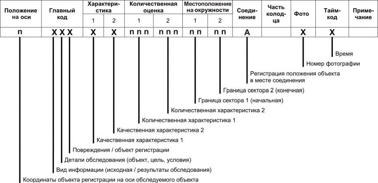
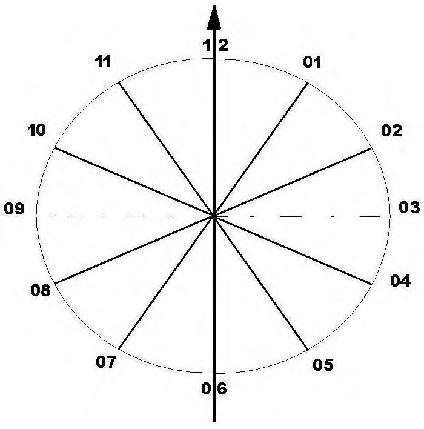
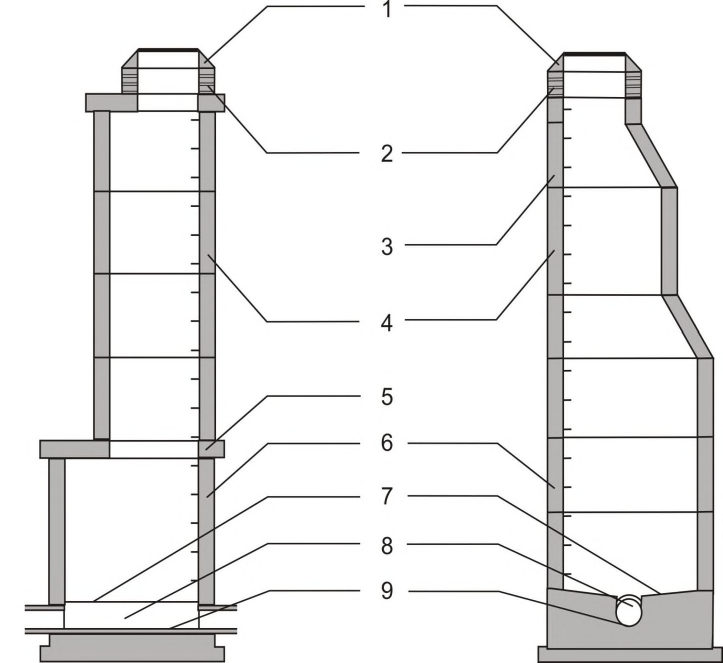
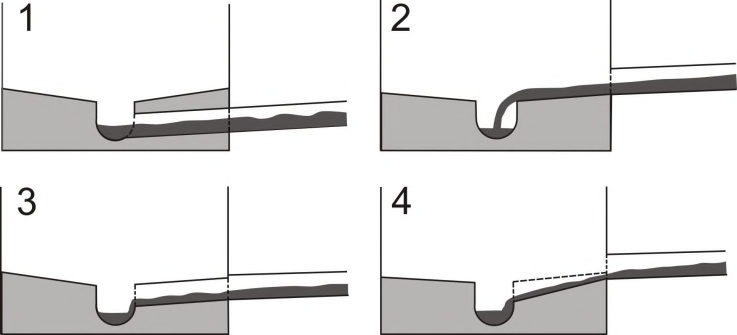

СП 272.1325800.2016 «Системы водоотведения городские и поселковые. Правила обсле»
О документе: разработчики, утверждение, регистрация, ключевые слова
Drainage system of cities and townships. The rules of inspection.
УДК 628
ОКС 93.030
Ключевые слова: трубопровод, гибкий полимерный рукав, санация, восстановительные работы
Директор НИИСФ РААСН
И.Л. Шубин
личная подпись
инициалы, фамилия
Руководитель разработки:
ОАО «Ордена Трудового Красного Знамени Академия коммунального хозяйства им. К.Д.Памфилова»
наименование организации
Генеральный директор
Р.И.Качаев
должность
личная подпись
инициалы, фамилия
Руководитель организации-разработчика: ООО «Три-С»
наименование организации
Генеральный директор ООО «Три-С»; член Объединения немецких предприятий в сфере водоснабжения/водоотведения и утилизации отходов (DWA), Сертифициро- ванный консультант по санации трубопрово- дов (DWA); член Союза консультантов по санации трубопроводов систем водоотведе- ния (VSB); к.т.н.
Ю.С. Захаров
должность
личная подпись
инициалы, фамилия
Ответственный исполнитель:
Генеральный директор ООО «Три-С»; член Объединения немецких предприятий в сфере водоснабжения/водоотведения и утилизации отходов (DWA), Сертифициро- ванный консультант по санации трубопрово- дов (DWA); член Союза консультантов по санации трубопроводов систем водоотведе- ния (VSB); к.т.н.
Ю.С. Захаров
должность
личная подпись
инициалы, фамилия
Исполнитель:
Вице-президент Российского общества по бестраншейным технологиям (РОБТ), д.т.н., профессор
В.А. Орлов
должность
личная подпись
инициалы, фамилия
1Область применения
Настоящий свод правил устанавливает требования к проведению обследований при оценке состояния сетей водоотведения и распространяется на перекладку, восстановление или ремонт трубопроводов систем водоотведения.
2Нормативные ссылки
В настоящем своде правил использованы нормативные ссылки на следующие документы:
ГОСТ 17.1.1.01-77 Охрана природы. Гидросфера. Использование и охрана вод. Основные термины и определения
ГОСТ 19185-73 Гидротехника. Основные понятия. Термины и определения
ГОСТ 25150-82 Канализация. Термины и определения
СП 14.13330.2014 «СНиП II-7-81* Строительство в сейсмических районах» (с изменением № 1)
СП 32.13330.2012 «СНиП 2.04.03-85 Канализация. Наружные сети и сооружения» (с изменением № 1)
СП 42.13330.2011 «СНиП 2.07.01-89* Градостроительство. Планировка и застройка городских и сельских поселений»
\_\_\_\_\_\_\_\_\_\_\_\_\_\_\_\_\_\_\_\_\_\_\_\_\_\_\_\_\_\_\_\_\_\_\_\_\_\_\_\_\_\_\_\_\_\_\_\_\_\_\_\_\_\_\_\_\_\_\_\_\_\_\_\_\_\_\_\_\_\_\_\_
Примечание - При пользовании настоящим сводом правил целесообразно проверить действие ссылочных документов в информационной системе общего пользования - на официальном сайте федерального органа исполнительной власти в сфере стандартизации в сети Интернет или по ежегодному информационному указателю «Национальные стандарты», который опубликован по состоянию на 1 января текущего года, и по выпускам ежемесячного информационного указателя «Национальные стандарты» за текущий год. Если заменен ссылочный документ, на который дана недатированная ссылка, то рекомендуется использовать действующую версию этого документа с учетом всех внесенных в данную версию изменений. Если заменен ссылочный документ, на который дана датированная ссылка, то рекомендуется использовать версию этого документа с указанным выше годом утверждения (принятия). Если после утверждения настоящего свода правил в ссылочный документ, на который дана датированная ссылка, внесено изменение, затрагивающее положение, на которое дана ссылка, то это положение рекомендуется применять без учета данного изменения. Если ссылочный документ отменен без замены, то положение, в котором дана ссылка на него, рекомендуется применять в части, не затрагивающей эту ссылку. Сведения о действии сводов правил целесообразно проверить в Федеральном информационном фонде стандартов.
3Термины и определения
В настоящем своде правил применены следующие термины с соответствую-
- щими определениями
- 3.1 берма (приступок): Горизонтальная поверхность, граничащая с желобом (руслом) канала колодца или большого водоотводящего канала. 3.2 визуальное обследование трубопроводов: Качественная оценка состояния внутренней поверхности и эксплуатационных свойств трубопровода, полученная в процессе обхода (при обследовании проходных трубопроводов) или обследования трубопровода изнутри с применением дистанционно управляемых телевизионных установок. 3.3 водоприемник: Водный объект или искусственное сооружение, в которое отводятся сточные воды. 3.4 водосбросное сооружение: Жесткое соединение трубопроводов системы водоотведения, предназначенное для автоматического сброса избыточной воды через специальный трубопровод или желоб. 3.5 горловина колодца: Часть колодца между опорным кольцом и рабочей камерой. 3.6 грунтовые воды: Воды, которые располагаются на небольшой глубине от поверхности земли.
- 3.7дефект
- Отдельное несоответствие конструкций какому-либо параметру, установленному проектом или нормативным документом.
- 3.8длина трубы
- Стандартная протяженность трубы, изготовленной на предприятии-изготовителе.
- 3.9дождевая вода
- Не проникающие в грунт атмосферные осадки, поступающие в систему водоотведения с наружной поверхности здания и поверхности земли.
- 3.10заказчик
- Организация - собственник системы водоотведения или ответственная за эксплуатацию системы водоотведения.
- 3.11инспекционное отверстие
- Отверстие со съемной крышкой, расположенное на трубопроводе или канале системы водоотведения, которое обеспечивает доступ к ним снаружи для очистки и инспекции, но без доступа персонала.
- 3.12инспекция трубопроводных систем
- Регистрации состояния и эксплуатационных свойств трубопроводных систем на основании результатов обследования.
- 3.13интервал
- Непрерывный участок трубопровода или канала между двумя соседними колодцами.
- 3.14инфильтрация грунтовых вод
- Самопроизвольное поступление грунтовых вод в систему водоотведения.
- 3.15канал системы водоотведения
- Трубопровод большого диаметра и протяженности для системы водоотведения сточных вод из большого числа источников.
- 3.16канализация
- Отведение бытовых, промышленных и сточных вод. [ГОСТ 19185-73, статья 9]
- 3.17канализационная сеть
- Система трубопроводов, каналов или лотков и сооружений на них для сбора и отведения сточных вод.Источник: ГОСТ 25150-82, статья 14
- 3.18колодец
- Гидротехническое сооружение цилиндрической или квадратной формы, снабженное смотровым лазом со съемной крышкой, устанавливаемое в системе водоотведения (трубопроводах, каналах), предназначенное для сопряжения двух и более трубопроводов и обеспечения доступа обслуживающего персонала.
- 3.19комплексное управление сетями
- Согласованное управление эксплуатацией, развитием, строительством, санацией сетей системы водоотведения для обеспечения сохранности сооружений и экономически эффективного функционирования сетей с заданными гидравлическими и эксплуатационными характеристиками без ущерба для окружающей среды.
- 3.20конус
- Часть колодца с плавно изменяющимся размером сечения.
- 3.21кодирование информации
- Процесс преобразования и (или) представления данных.
- 3.22лоток
- Нижняя образующая часть поверхности трубы или желоба любого сечения.
- 3.23место соединения трубопроводов
- Координата на оси обследуемого трубопровода, определяющая место соединения двух трубопроводов.
- 3.24напорный трубопровод системы водоотведения
- Трубопровод для транспортирования сточных вод под давлением (без свободной поверхности).
- 3.25обследование
- Комплекс мероприятий по определению и оценке фактических значений контролируемых параметров, характеризующих эксплуатационное состояние, пригодность и работоспособность объектов обследования и определяющих возможность их дальнейшей эксплуатации или необходимость восстановления.
- 3.26общесплавная система канализации
- Система канализации, предназначенная для совместного отведения и очистки всех видов сточных вод, включая городские и поверхностные.Источник: СП 32.13330.2014, А.3
- 3.27опорное кольцо
- Элемент конструкции колодца, устанавливаемый на его горловину и применяемый для регулирования положения колодезного люка.
- 3.28отводной канал
- сточные воды поступают на очистные сооружения.
- 3.29отвод
- устройства соединения двух трубопроводов под разными углами. Гидротехническое сооружение или место, в котором Элемент конструкции стандартного промышленного изделия для
- 3.30перепадной колодец
- Колодец для соединения канализационных трубопроводов разной глубины залегания с помощью вертикальной трубы, нижний край которой располагается на лотке или непосредственно над лотком трубопровода, расположенного на наибольшей глубине.
- 3.31площадка
- Промежуточная площадка для отдыха разделяющая дистанцию подъема.
- 3.32полураздельная система канализации
- Система коммунальной канализации, при которой устраиваются две самостоятельные уличные сети трубопроводов: одна для отведения городских сточных вод, другая - для отведения дождевого, талого и поливомоечного стока; главные коллектора, отводящие все виды сточных вод на очистные сооружения населенного пункта, устраиваются общесплавными и при превышении расчетных расходов часть дождевых вод через разделительные камеры сбрасывается в водоем без очистки.Источник: СП 32.13330.2012, А.4
- 3.33примыкание
- Наименование места соединения одного трубопровода с другим трубопроводом или колодцем.
- 3.34рабочая камера колодца
- Рабочее пространство внутри колодца над руслом (желобом) канала.
- 3.35раздельная система канализации
- Система канализации, при которой устраиваются две или более самостоятельные канализационные сети: сеть для отведения хозяйственно-бытовых и части производственных сточных вод, допускаемых к сбросу в систему городской канализации; сеть для загрязненных производственных сточных вод, не допускаемых к совместному отведению и очистке с бытовыми сточными водами; сеть для отведения с селитебных территорий и площадок предприятий дождевого, талого и поливомоечного стока, который перед сбросом в водоем подвергается очистке.Источник: СП 32.13330.2012, А.5
- 3.36ремонт
- Мероприятия для устранения местных локальных повреждений.
- 3.37самотечный трубопровод системы водоотведения
- Трубопровод, транспортирующий жидкость со свободной поверхности за счет силы тяжести.
- 3.38санация
- Все мероприятия, осуществляемые для восстановления или улучшения функциональных свойств существующего трубопровода.
- 3.39система водоотведения частных участков
- Система трубопроводов и дополнительных сооружений на частных земельных участках для водоотведения бытовых сточных вод и/или дождевой воды к водоприемнику для последующей очистки и утилизации. 3.40 стеновое кольцо колодца: Часть конструкции колодца или ревизионного отверстия, представляющая собой законченное изделие, предназначенное для соединения с другими элементами конструкции колодца. 3.41
- сточные воды
- Воды, отводимые после использования в бытовой и производственной деятельности человека.Источник: ГОСТ 17.1.1.01-77, статья 29
- 3.42сточные воды централизованной системы водоотведения
- Воды, принимаемые от абонентов в централизованные системы водоотведения, а также дождевые, талые, инфильтрационные, поливомоечные, дренажные воды, если централизованная система водоотведения предназначена для приема таких вод. 3.43 техническое обследование централизованных систем горячего и холодного водоснабжения и (или) водоотведения : Оценка технических характеристик объектов централизованных систем горячего и холодного водоснабжения и (или) водоотведения. 3.44 труба: Промышленное изделие из различных конструкционных материалов стандартной формы полого поперечного сечения и размеров, используемое в качестве конструктивного элемента при строительстве трубопроводов и каналов. 3.45 трубопровод системы водоотведения: Трубопровод для отвода сточных вод от места их приема к водоприемнику. 3.46 трубопровод: Сооружение для транспортирования жидких сред между колодцами и другими гидротехническими сооружениями выполненное либо из различного материала труб (чугун, керамика, хризотилцемент, бетон, железобетон, полиэтилен и т.д.), плотно соединенных между собою, соединительных (фасонных) частей, или из кирпичной кладки или монолитного бетона. 3.47 узел: Колодец, инспекционное отверстие, выпуск, отверстие для очистки или другая, однозначно определяемая точка канализационной сети. 3.48 уклон: Разница между вертикальными проекциями начала и конца участка трубопровода, деленная на расстояние между ними по горизонтали.
- 3.49шелыга
- Верхняя образующая часть поверхности трубы или желоба любого сечения.
- 3.50эксфильтрация сточных вод
- Просачивание сточных вод из системы водоотведения в окружающий грунт. Примечание При пользовании настоящим сводом правил целесообразно проверить действие ссылочных документов в информационной системе общего пользования на официальном сайте федерального органа исполнительной власти в сфере стандартизации в сети Интернет или по ежегодному информационному указателю «Национальные стандарты», который опубликован по состоянию на 1 января текущего года, и по выпускам ежемесячного информационного указателя «Национальные стандарты» за текущий год. Если заменен ссылочный документ, на который дана недатированная ссылка, то рекомендуется использовать действующую версию этого документа с учетом всех внесенных в данную версию изменений. Если заменен ссылочный документ, на который дана датированная ссылка, то рекомендуется использовать версию этого документа с указанным выше годом утверждения (принятия). Если после утверждения настоящего свода правил в ссылочный документ, на который дана датированная ссылка, внесено изменение, затрагивающее положение, на которое дана ссылка, то это положение рекомендуется применять без учета данного изменения. Если ссылочный документ отменен без замены, то положение, в котором дана ссылка на него, рекомендуется применять в части, не затрагивающей эту ссылку. Сведения о действии сводов правил целесообразно проверить в Федеральном информационном фонде стандартов.
4Общие положения
- щадок предприятий, следует руководствоваться указаниями настоящего свода правил, а также других нормативных документов, регламентирующих работу этих систем, в том числе и региональных. 4.4 При проведении обследования систем водоотведения необходимо обеспечивать соответствующую безопасность и санитарно-гигиенические условия труда. 4.5 К проведению работ по обследованию объектов систем канализации допускаются организации, обладающие необходимым оборудованием и штатом квалифицированных специалистов. Квалификация организации на право проведения обследования и оценки технического состояния объектов систем канализации должна быть подтверждена соответствующими дипломами и сертификатами. 4.6 Необходимость в проведении работ по обследованию, их объем, состав, характер зависят от поставленных задач. Основанием для обследования служит: -наличие дефектов и повреждений конструкции трубопровода или иных объектов системы канализации, которые снижают прочностные, деформативные характеристики конструкций и ухудшить эксплуатационное состояние объектов системы канализации; -увеличение эксплуатационных нагрузок; -отсутствие проектно-технической и исполнительной документации; -деформация грунтовых оснований; -необходимость контроля и оценки состояния конструкции трубопровода или иных объектов системы канализации, расположенных вблизи вновь строящихся жилых районов или подключения к системе существующей канализации других городских или поселковых трубопроводных систем канализации; -необходимость оценки состояния строительных конструкций трубопровода или иных объектов системы канализации, подвергшихся воздействию стихийных бедствий природного характера или техногенных аварий; -необходимость проверки соответствия конструкции и эксплуатационных свойств трубопроводов, каналов или иных объектов системы канализации требованиям нормативных актов. 4.7 При обследовании следует учитывать специфику материалов, из которых выполнены конструкции трубопровода или иных объектов системы канализации. 4.8 Техническое состояние конструкции трубопровода или иных объектов системы канализации оценивают на основании результатов обследования и дают за-
- ключение о его состоянии. Объекты подразделяются на находящиеся в: исправном; работоспособном; ограниченно работоспособном; недопустимом или аварийном состояниях.
При исправном и работоспособном состояниях эксплуатация конструкции трубопровода или иных объектов системы канализации возможна без ограничений. При этом, может устанавливаться требование периодического обследования в процессе эксплуатации.
При ограниченно работоспособном состоянии конструкции трубопровода или иных объектов системы канализации необходим постоянный его мониторинг и в случае образования аварийной ситуации требуется повторное обследование с определением перечня восстановительно-ремонтных работ. Для осуществления мониторинга возможно использование геоинформационных систем, созданных с применением кодированной информации (коды дефектов, позволяют оператору, осуществляющему обследование с применением телевизионных камер, предоставить необходимую информацию инженерной службе для принятия решения о дальнейшей эксплуатации объекта), позволяющих хранить обновлять в единой базе данных информацию о конструкции сетей водоснабжения/водоотведения, информацию о ремонтно-восстановительных работах и результаты всех проведенных обследований.
- расчетной сейсмичности площадки строительства по СП 14.13330;
- повторяемости сейсмического воздействия;
- спектрального состава сейсмического воздействия;
- категории грунтов по сейсмическим воздействиям.
5Технические требования к обследованию трубопроводов, каналов и колодцев системы водоотведения
Информация о состоянии сетей должна регулярно обновляться.
Цель обследования предопределяет выбор методов, степень детализации, необходимую точность и способ оценки результатов.
Обследование трубопроводов городских и поселковых систем водоотведения при заданных границах обследования включает в себя:
- проверку работоспособности системы водоотведения;
- анализ существующей информации об эксплуатации системы водоотведения;
- актуализацию данных о системе водоотведения (инвентаризацию сетей);
- исследование состояния трубопроводов;
- » » гидравлических характеристик трубопроводов;
- » » влияния системы трубопроводов на окружающую среду;
- » » влияния эксплуатационных мероприятий на систему водоотведения.
- частоты и места возникновения затоплений, засоров и обрушений трубопроводов;
- частоты профессиональных заболеваний, травм (в том числе и со смертельным исходом) обслуживающего персонала и других лиц;
- существующих повреждений трубопроводов;
- соблюдения условий, необходимых для транспортирования сточных вод;
- результатов предыдущих обследований;
- вредных воздействий образующихся в канализации газов;
- результатов проверочных гидравлических расчетов;
- исправности механических и электрических устройств;
- результатов мониторинга функционирования системы;
- функциональных свойств и состояния системы управления сточными водами, возможных перегрузок системы.
- данных об объекте обследования:
- местоположение, размеры, форма и конструкционный материал всех трубопроводов, каналов и колодцев;
- местоположение, глубину колодцев и координаты примыканий;
- местоположение примыканий и врезок к трубопроводам/каналам;
- местоположение, подключение и характеристики специальных сооружений (насосных станций, грязеуловителей и т.д.));
- законодательных ограничений и требуемых разрешений на проведение работ;
- данных о проводившихся до последнего времени эксплуатационных и строительных мероприятиях;
- информации о составе и объеме отводимых промышленных сточных вод;
- результатов проводившихся ранее расчетов гидравлических характеристик трубопроводов;
- предыдущих оценок влияния системы водоотведения на окружающую среду;
- данных о состоянии существующих трубопроводов и каналов;
- данных о применении водоприемников; о динамике изменения уровня грунтовых вод; о характере грунтов, в том числе об их инфильтрационной способности;
- данных о наличии водоохранных зон;
- результатов предыдущих обследований;
- характеристик сточных вод.
При обследовании проходных коллекторов следует избегать привлечения персонала для их обхода. Обход следует проводить только в случае невозможности получения достоверной информации с помощью телевизионной камеры.
- трещины;
- деформации;
- смещения стыков;
- осадка;
- корни растений;
- источники инфильтрации грунтовых вод,
- отложения, прилипшие вещества;
- другие препятствия транспортированию сточных вод;
- повреждения колодцев;
- механические повреждения и/или химическая коррозия.
- гидравлических характеристик сточных вод, транспортируемых системой водоотведения;
- мощности системы водоотведения;
- оценку возможности возникновения перегрузок системы и вероятности возникновения подпора.
Расчеты не проводятся: если в системе отсутствуют проблемы с гидравликой; отсутствует водосброс; дефекты элементов сооружения могут быть устранены без ухудшения гидравлических характеристик существующей системы водоотведения
В процессе обследования проверяется соответствие значений показателей воды в поверхностных водоемах действующим нормам.
В первую очередь следует обследовать трубопроводы, каналы и колодцы систем для отвода промышленных сточных вод и ливневой канализации. При этом особое внимание следует уделять трубопроводам, каналам и колодцам, расположенным в водоохранных зонах или осуществляющим транспортирование особо опасных веществ.
Также следует учитывать другие аспекты, оказывающие влияние на окружающую среду (шум, запах, потенциальное загрязнение почвы).
Анализируется периодичность реализации плановых профилактических мероприятий, таких как обследование, очистка, уничтожение грызунов и насекомых.
Обязательной регистрации и исследованию подлежат случаи образования засоров трубопроводов и каналов, насосов, арматуры, а так же случаи полного выхода из строя компонентов системы (обрушение трубопроводов и каналов).
Данные о проведенных мероприятиях должны быть проанализированы с целью определения частоты возникновения повреждений и эффективности принятых мер.
При разработке программы обследования должны учитываться действующие эксплуатационные регламенты, планы обследования и проведения регламентных работ.
Если данных, находящихся в расположении заказчика не достаточно, то необходимо провести исследования гидравлических свойств, состояния и эксплуатационных свойств трубопроводов системы водоотведения, ее воздействия на окружающую среду для получения дополнительной информации.
6Правила разработки программы обследования
К возможным целям обследования относятся:
- мониторинг состояния и работоспособности городской или поселковой системы водоотведения для разработки перспективного плана ее развития;
- детальное обследование трубопроводов для разработки плана мероприятий по реализации перспективного плана развития городской или поселковой системы водоотведения;
- обследование, как часть разработки проекта для полной или частичной реализации перспективного плана развития городской или поселковой системы водоотведения;
- обследование системы водоотведения после аварии для разработки технического задания на выполнение ремонтно-восстановительных работ;
- исследование устойчивости системы водоотведения с точки зрения риск- менеджмента.
- границы обследования (координаты, доступность);
- программу обследования, требования к оборудованию;
- указания по проверке исходных данных;
- требования к качеству очистки трубопровода;
- план организации водоотведения;
- указания по организации дорожного движения в месте производства работ (при необходимости);
- правила производства работ в ночное время;
- направление обследования;
- число промежуточных колодцев;
- инструкции о действиях подрядчика при невозможности продолжении обследования;
- действия при аварийных ситуациях;
- контактные данные подрядчика;
- требования к отчетной документации;
- требования по охране труда;
- перечень наиболее опасных участков (в случае необходимости).
7Правила визуального обследования трубопроводов, каналов и колодцев системы водоотведения
Заключение о состоянии трубопроводов, каналов и колодцев систем водоотведения составляется, в большинстве случаев, на основании результатов визуального обследования, которое предполагает непосредственный осмотр трубопроводов в процессе обхода или обследование с применением дистанционно управляемых телевизионных камер.
7.1Необходимость и цели визуального обследования
Плановый, порайонный сбор информации о состоянии системы водоотведения и ее эксплуатационных характеристиках проводится в рамках планового визуального обследования для сравнения с данными проектной документации и результатами предыдущего обследования. Объем выполняемых работ зависит от качества существующей документации.
При проведении обследований следует учитывать необходимость обеспечения сопоставимости результатов. Данные очередного обследования должны быть совместимы с результатами предыдущих обследований.
Визуальное обследование систем водоотведения обязательно при сдаче-приемке новых объектов и проведении мероприятий по обеспечению гарантийных обязательств. Результаты визуального обследования применяются для подтверждения выполнения работ, как при строительстве, так и при ремонте и восстановлении систем водоотведения.
Визуальное обследование для определения состояния трубопровода - обязательный этап выполнения работ по санации сетей. Перед началом санации необходимо провести визуальное обследование объекта, чтобы зафиксировать его исходное состояние. Одновременно проводятся обмеры сечения трубопровода.
При ликвидации аварий, часто не требуется высокое качество результатов визуального обследования - в первую очередь требуются скорость реакции и технические возможности оборудования для работы в экстремальных условиях.
7.2Оборудование для визуального обследования трубопроводов, каналов и колодцев системы водоотведения
7.2.2 Требования к оборудованию
Телевизионная камера должна обладать достаточной глубиной резкости в интервале 0,1…1,5 м и за счет дистанционного управления фокусировкой регистрировать объекты на расстоянии 0,01…4 м. При обследовании трубопроводов с ДУ > 200 мм камера должна оснащаться вариообъективом с 10-кратным увеличением. Разрешение камеры должно быть не менее 400х300 пикселей; частота кадров - более 16 Гц; она должна обеспечивать круговое сканирование объекта и отклонение оси визирования в пределах ±135°. Система подсветки должна гарантировать качественное освещение трубопровода на расстоянии 3…4 м от камеры. Погрешность определения местоположения камеры в трубопроводе должна составлять не более 25 см. Длина кабеля электропитания, в случае размещения оборудования в автомобиле, должна составлять минимум 200 м. Конструкцией оборудования должна быть обеспечена возможность проведения работ при температуре от минус 20°С до плюс 45°С.
При обследовании применяют телевизионные установки с ручным управлением видеозаписью и одновременным описанием состояния трубопровода или с заданным алгоритмом видеофиксации.
7.2.3 Обследование непроходных трубопроводов и каналов
Визуальное обследование непроходных трубопроводов 100 ≤ Д у ≤ 700 мм проводится с применением дистанционно управляемых телевизионных установок, состоящих из следующих главных компонентов: телевизионной камеры; платформы для перемещения камеры; системы электропитания и передачи данных; пульта управления.
При визуальном обследовании непроходных трубопроводов применяют:
- аксиальные камеры - телевизионные камеры, с одним направлением визирования. Они применяются при обследовании трубопроводов с Ду = 50…100 мм. При необходимости эти камеры оснащаются приспособлениями для фиксации изображения и встроенными датчиками местоположения;
- камеры с поворотным, вращающимся объективом - телевизионные камеры, изменяющие направление визирования, они применяются при обследовании трубопроводов с Ду ≥ 100 мм; камеры оснащаются вариообъективом, системой автоматической фокусировки и стабилизации изображения, датчиками местоположения. Они позволяют проводить количественную оценку повреждений с применением лазерных датчиков;
- специальные телевизионные установки, которые позволяют формировать цифровые панорамные изображения внутренней поверхности трубопроводов с Ду ≥ 150 мм.
Для организации подсветки внутренней поверхности трубопровода применяются светодиоды и галогенные лампы.
Для перемещения телевизионных камер внутри трубопроводов диаметром Ду ≥ 100 мм применяются управляемые платформы с механическим или электрическим приводом регулирования положения оси камеры.
Если применение платформы не возможно, то для перемещения камеры используют гибкий прут.
Для обследования примыканий можно применять установку с двумя камерами. Одна камера предназначена для обследования коллектора, а другая, с отдельным приводом, примыкающего трубопровода.
Электропитание телевизионных установок осуществляется с помощью специального кабеля, который применяется также для определения координат камеры. При большом объеме информации данные передают по оптоволоконному кабелю.
Пульт управления применяется для управления всеми компонентами установки для ТВ-обследования, а также процессом сбора и хранения информации. Пульт управления стационарными системами состоит из монитора, пользовательского интерфейса с клавиатурой, рукоятки управления, компьютера и программного обеспечения. Мобильные системы имеют ту же комплектацию, только меньших размеров.
Дистанционно управляемые телевизионные установки могут оснащаться дополнительным оборудованием, позволяющим: определять текущие координаты камеры и возможные отклонения оси визирования от оси трубопровода; измерять линейные размеры дефектов; определять размеры сечения, значение деформаций и профиль трубопровода; измерять температуру внутри обследуемого трубопровода.
7.2.4 Обследование проходных трубопроводов и каналов
Визуальное обследование проходных трубопроводов проводится в процессе обхода. При этом применяют устройство для регистрации состояния трубопровода (состоит из камеры и подсветки) и устройство для перемещения кабеля.
При обследовании применяют аксиальные камеры с 10-кратным увеличением. Другие технические характеристики ТВ-камер должны соответствовать приведенным выше требованиям.
Обработка результатов и подготовка протокола обследования производится после обхода.
Визуальное обследование при обходе предполагает тщательную подготовку работ, особенно в части обеспечения безопасности их проведения.
При обследовании трубопровода, телевизионная камера, которая перемещается вместе с обходчиком, как правило, соединена с пультом управления, на котором регистрируется и обрабатывается видеоинформация. Инспектор, находящийся за пультом управления, может по радиосвязи корректировать действия обходчика.
Применяемые телевизионные камеры и системы подсветки должны быть ударопрочными и защищенными от воздействия водяных брызг. В качестве источников питания рекомендуется использовать аккумуляторные батареи, обеспечивающие непрерывную работу камеры в течение рабочей смены. При непрерывной видеорегистрации объекта обследования должна быть обеспечена стабильность подсветки.
7.2.5 Обследование колодцев
Для визуального обследования колодцев применяют: фотоаппараты и телевизионные камеры; системы для обследования колодцев с цифровыми камерами; системы для обследования колодцев с телевизионными камерами.
К оборудованию, применяемому при обследовании колодцев, устанавливаются те же требования, что и к оборудованию, применяемому при обследовании трубопроводов. Исключение составляет требование к разрешению цифровых камер (1280х1024 пикселей).
7.3Правила производства работ при визуальном обследовании трубопроводов, каналов и колодцев системы водоотведения
7.3.1 Общие требования к производству работ
Цель визуального обследование трубопроводов городских и поселковых систем водоотведения - регистрация состояния как сети в целом, так и отдельных ее элементов (трубопроводов, каналов, колодцев, врезок).
В процессе обследования оценивается техническое состояние элементов сетей (выявление и оценка трещин, наличие коррозионных повреждений, регистрация и определение местоположения провалов, сдвиговых деформаций), герметичность соединений труб, врезок и примыканий к колодцам, интенсивность инфильтрации грунтовых вод. Также регистрируется местоположение твердых отложений, корневых систем и посторонних предметов, затрудняющих отвод сточных вод.
По результатам обследования могут корректироваться планы канализационных сетей.
7.3.2 Охрана труда
Проведение работ по обследованию трубопроводов и каналов городских и поселковых систем водоотведения связано с риском для жизни задействованного персонала. Для обеспечения безопасного выполнения работ следует неукоснительно выполнять действующие предписания по безопасному их проведению.
7.3.3 Организация работ на проезжей части
Проведение работ на проезжей части оказывает непосредственное влияние на дорожное движение и представляет серьезную опасность как для участников дорожного движения, так и для специалистов, выполняющих обследование.
Работы следует проводить только при наличии согласования с автоинспекцией.
7.3.4 Организация отвода сточных вод
Для оценки состояния трубопроводов городских и поселковых систем водоотведения обязательно обследование лотка трубопровода. Если при функционирующей системе водоотведения это не возможно, то необходимо устройство контролируемого и безопасного отвода сточных вод. В процессе отвода сточных вод следует избегать возникновения подпора.
7.3.5 Очистка трубопровода
Для получения достоверных результатов непосредственно перед обследованием, следует провести комплексную очистку трубопровода системы водоотведения.
Перед началом визуального обследования стенки трубопровода должны просохнуть, чтобы исключить образование бликов. В общем случае интервал между очисткой и инспекцией не должен превышать 48 ч.
Интенсивность очистки должна обеспечить удаление всех растворимых отложений.
7.3.6 Обследование трубопроводов
Для визуального обследования трубопроводов и каналов должна применяться ТВ-камера, позволяющая формировать изображение как в осевом направлении, так и обеспечивающая круговое сканирование. Камера должна быть оснащена датчиками положения и позиционироваться по оси трубопровода или канала.
Начало и конец обследуемого участка трубопровода или канала должны подвергаться круговому сканированию. Процесс обследования полностью записывается регистрирующим устройством.
Первое соединение труб полностью фиксируется в осевом и радиальном направлении.
Другие соединения фиксируются в зависимости от их состояния. При обнаружении дефектов в месте стыка труб, проводится его круговое сканирование и фиксация картины повреждений.
Врезки и отводы следует регистрировать так, чтобы было видно соседнее соединение труб.
Места повреждений сканируют сначала в осевом направлении, а потом проводят круговое сканирование. По завершении сканирования камера должна возвращаться в исходное положение. Движение камеры допускается только при регистрации продольных трещин.
При фотофиксации повреждений съемка проводится в осевом направлении. Если необходимо получить несколько снимков, то для каждого снимка следует указывать местоположение камеры на оси трубопровода.
Максимальная скорость перемещения камеры не должна превышать 15 см/с.
При сканировании поверхности трубопровода необходимо следовать рекомендациям изготовителя оборудования. Круговое сканирование и исследование деталей проводится только при неподвижной камере.
7.3.7 Обследование колодцев
Колодцы обследуют от лотка в направлении крышки люка.
При документировании результатов обследования с применением отдельных фотоснимков, необходимо сделать минимум один снимок с поверхности земли. При съемке камера должна позиционироваться по оси колодца и должно быть обеспечено достаточное освещение его.
Освещение считается достаточным, если различимы все детали лотковой части колодца.
При регистрации отдельных объектов внутри колодца, помимо кода следует проводить фотофиксацию.
7.3.8 Обеспечение качества обследования
Допущенный к проведению обследования персонал, как со стороны заказчика, так и со стороны подрядчика, должен: определять по картине повреждений причину их возникновения; осуществлять электронную передачу данных о результатах обследования; знать технологию водоотведения, применяемые при строительстве систем водоотведения материалы, правила строительства и обслуживания сетей; знать правила обследования и оценки состояния трубопроводов; знать систему кодировки результатов обследования; знать требования техники безопасности при проведении ра- бот.
Персонал подрядчика, помимо указанных выше квалификационных требований должен владеть навыками работы с инспекционным оборудованием и специализированным программным обеспечением.
Квалификация персонала должна быть подтверждена дипломами или свидетельствами об окончании курсов повышения квалификации.
8Классификация видов повреждений
8.1Общая информация
При этом качество полученной информации и сопоставимость результатов обследования с предыдущими данными, имеют решающее значение.
- ремонтных работ, проведении инвентаризации и мониторинга трубопроводных сетей. 8.1.7 При проведении визуального обследования систем водоотведения регистрируются следующие повреждения трубопроводов, каналов и колодцев: деформации; трещины; провалы; дефекты кирпичной кладки; отсутствие кладочного раствора; поверхностные повреждения; выступающие примыкания; поврежденные примыкания; выступающий уплотнитель; смещения труб; повреждения облицовки, отремонтированных участков, сварных швов; пористая внутренняя поверхность трубопровода; видимый грунт; видимые пустоты; поврежденные ходовые скобы; повреждения опорного кольца и люка колодца. В приложении А приведены типичные повреждения трубопроводов самотечных систем водоотведения.
8.2Правила регистрации результатов визуального обследования трубопроводов, каналов и колодцев системы водоотведения
Содержание отчета включает в себя:
- наименование заказчика;
- наименование подрядчика;
- место обследования;
- дату обследования;
- инициалы, фамилию инспектора;
- текущий номер отчета;
- наименование обследуемого объекта;
- направление обследования;
- длину объекта;
- данные объекта (вид сточных вод, сечение трубопровода, размеры, материал, данные конструктивных элементов);
- название улицы;
- погодные условия (сухая погода, после дождя, в дождь и т.д.);
- результат инспекции (коды с расшифровкой);
- разъяснения и замечания;
- обозначение формата хранения данных;
- графический отчет (приложение Б);
- табличный отчет (приложение В).
- месте обследования;
- дате обследования;
- данных отчета (номер фотографии, номер отчета);
- наименовании обследуемого объекта;
- месте фиксации;
- тайм-коде (временной код видеоинформации), а также должно быть приведено краткое описание картины повреждений.
Данные ТВ-инспекции должны храниться в цифровой форме.
Отчеты не должны содержать оценки состояния трубопровода.
Данные об обследовании включают в себя: исходную информацию об обследуемом объекте; план обследования; данные о состоянии объекта.
Данные передаются заказчику в согласованном формате.
Результаты фото/видеофиксации являются первичной информацией для оценки результатов обследования.
При применении аналоговых камер стандарта S-VHS информация передается на кассетах (PAL) с продолжительностью воспроизведения 240 мин.
Для цифрового кодирования видеосигналов применяется стандарт MPEG2.
Скорость передачи данных 4 Мбит/с. Данные хранятся на жестком диске.
- наименование подрядчика;
- место производства работ (город, район);
- название улицы;
- профиль трубопровода и результаты измерений;
- материал трубопровода;
- наименование объекта;
- направление обследования;
- временной код;
- местоположение;
- дата, время проведения работ;
- код состояния и его расшифровка.
8.3Применение системы кодировки
Каждый объект регистрации (повреждение, явление, объект) описывается с применением пятнадцатиразрядного буквенно-цифрового кода (рисунок 1). Наименование объекта регистрации устанавливает трехразрядный главный код, который представляет собой сочетание трех букв латинского алфавита (таблица 8.1). Два разряда кода применяются для качественной характеристики объекта регистрации, два разряда - для количественной характеристики объекта регистрации, два разряда для определения местоположения объекта регистрации, один разряд - для позиционирования объекта обследования относительно стыков труб и один разряда - для примечаний. Кроме того, предусмотрены разряды для тайм-кода и номера фотографии.
Рисунок 1 - Структура кода для описания повреждений или регистрируемого объекта

СП 272.1325800.2016
Таблица 8.1 - Структура главного кода
| Позиция главного кода | Вариант кодирования | Содержание кода |
|---|---|---|
| Х 2 | A | Исходная информация о трубопроводах и каналах |
| Х 2 | B | Результаты обследования трубопроводов и каналов |
| Х 2 | C | Исходная информация о колодцах |
| Х 2 | D | Результаты обследования колодцев |
| Х 3 | A | Описания состояния конструкции объекта |
| Х 3 | B | Описания дефектов влияющих на функциональные свойства объекта |
| Х 3 | C | Коды, применяемые при инвентаризации объектов |
| Х 3 | D | Коды для регистрации дополнительной информации |
| Х 4 | Вид повреждения/объекта регистрации |
8.4Правила обмена информацией о состоянии трубопроводов, каналов и колодцев
Перед началом обследования заказчик и подрядчик должны согласовать формат передачи данных.
9Правила описания и регистрации состояния трубопроводов, каналов и колодцев системы водоотведения
Правила регистрации состояния трубопроводов и каналов системы водоотведения
Если при обследовании обнаружены неизвестные ранее узлы, то для каждого из новых интервалов оформляется отдельный отчет. Если процесс обследования был прерван и проводится новое обследование, то оформляется новый отчет (даже при условии, что обследование проводится в том же направлении и из той же исходной точки).
- Примечание- Если для одного и того же трубопровода были проведены многократные обследования, то при оформлении отчетной документации можно применять данные различных отчетов. 9.2 Каждый объект регистрации описывается с помощью комбинации главного кода и дополнительных кодов, которые содержат следующую информацию: - характеристику объекта регистрации - два разряда, более подробная характеристика объекта; - количественную оценку - два разряда; - местоположение объекта - два разряда для определения местоположения объекта на окружности; - соединение - один разряд -указывается при нахождении объекта регистрации в месте стыка труб; - положение на оси - один разряд - удаление от реперной точки, в том числе возможность для регистрации объектов, которые простираются на большую длину; результат - фото - один разряд для номера фотографии; - тайм - код при видеофиксации - один разряд;
- примечание - один разряд - текст, описывающий все аспекты объектов, которые другим способом описать невозможно.
Примеры описания повреждений трубопровода приведены в таблицах 9.1 и 9.2.
Таблица 9.1 - Пример регистрации продольной трещины в сводной части (шелыге) трубопровода
| Положение на оси, м | Главный код | Характеристика | Характеристика | Количествен- ная оценка | Количествен- ная оценка | Местоположение на окружности | Местоположение на окружности | Соеди- нение | Часть колодца | Фото | Тайм- код | Приме- чание |
|---|---|---|---|---|---|---|---|---|---|---|---|---|
| Положение на оси, м | Главный код | 1 | 2 | 1 | 2 | 1 | 2 | Соеди- нение | Часть колодца | Фото | Тайм- код | Приме- чание |
| 10,5 | ВAB | B | A | 12 | 00:10:30 |
Объект регистрации: продольная трещина в сводной части (шелыге) трубопровода на удалении 10,5 м от начала обследования.
Таблица 9.2 - Пример регистрации выступающего в нижней камере примыкания
| Положение на оси, м | Главный код | Характеристика | Характеристика | Количествен- ная оценка | Количествен- ная оценка | Местоположение на окружности | Местоположение на окружности | Соеди- нение | Часть колодца | Фото | Тайм- код | Приме- чание |
|---|---|---|---|---|---|---|---|---|---|---|---|---|
| Положение на оси, м | Главный код | 1 | 2 | 1 | 2 | 1 | 2 | Соеди- нение | Часть колодца | Фото | Тайм- код | Приме- чание |
| 16,5 | ВСА | E | А | 100 | 9 | 00:12:20 | ||||||
| 16,5 | ВАG | 50 | 9 | 00:12:20 | ||||||||
| Примечание- Для описания применяются два кода. | Примечание- Для описания применяются два кода. | Примечание- Для описания применяются два кода. | Примечание- Для описания применяются два кода. | Примечание- Для описания применяются два кода. | Примечание- Для описания применяются два кода. | Примечание- Для описания применяются два кода. | Примечание- Для описания применяются два кода. | Примечание- Для описания применяются два кода. | Примечание- Для описания применяются два кода. | Примечание- Для описания применяются два кода. | Примечание- Для описания применяются два кода. | Примечание- Для описания применяются два кода. |
Объект регистрации: выступающее в нижней камере примыкание диаметром 100 мм (выступает до середины главного коллектора) на удалении 16,5 м от начала инспекции.
Положение объекта регистрации, находящегося в сводной части трубопровода регистрируется числом 12.
Таблица 9.3 - Значение угла, соответствующее определенному значению времени на циферблате
| Угол | Время, ч |
|---|---|
| 0° ± 15° | 12 |
| 30° ± 15° | 01 |
| 60° ± 15° | 02 |
| 90° ± 15° | 03 |
| 120° ± 15° | 04 |
| 150° ± 15° | 05 |
| 180° ± 15° | 06 |
| 210° ± 15° | 07 |
| 240° ± 15° | 08 |
| 270° ± 15° | 09 |
| 300° ± 15° | 10 |

Если требуется указание границ объекта (повреждения), то они указываются во временных координатах. Если требуется одно значение, то указывается значение шкалы циферблата посередине объекта. Если объекты обнаружены в различных точках одной окружности, то они кодируются по отдельности.
Примеры определения границ объекта приведены на рисунке 2.
Рисунок 2 - Примеры определения границ объектов на окружности

Реперной точкой может служить: внутренняя стенка начального узла (колодец, инспекционное отверстие или выпуск и т.д.); свод (шелыга) на краю интервала внутри начального узла (кроме случаев, когда труба соединена с колодцем); середина стартового колодца или стартового инспекционного отверстия; средняя точка между входящим и исходящим трубопроводами, измеренная по лотку.
Координаты указываются в метрах с точностью до одной десятой. Если длина объекта более 1 м, то начало и конец фиксируются специальными кодами: А - начало, В - конец.
Если в процессе обследования установлено изменение исходной информации о положении объекта на оси трубопровода, то это отображается как окончание старого объекта и начало нового или повторением кода для объекта с коррекцией количественных характеристик.
Примечание- Если объект регистрации не может быть полностью описан с помощью кодов, то дополнительная информация кратко излагается в примечании.
Правила регистрации состояния колодцев системы водоотведения
- характеристику объекта регистрации - два разряда, более подробная характеристика объекта;
- количественную оценку - два разряда;
- местоположение объекта - два разряда для определения местоположения объекта;
- соединение - один разряд -указывается при нахождении объекта регистрации в месте стыка промышленно изготовленных элементов конструкции колодца;
- часть колодца - один разряд для позиционирования объекта регистрации внутри колодца (например, нижняя камера или лаз);
- положение на оси - один разряд - удаление от реперной точки, в том числе возможность для регистрации объектов, которые простираются на большую длину; результат; - фото - один разряд для номера фотографии; - тайм - код при видеофиксации - один разряд; - примечание - один разряд - текст, описывающий все аспекты объектов, которые другим способом описать невозможно.
Примеры описания повреждений колодца приведены в таблицах 9.4 и 9.5.
Таблица 9.4 - Пример кодирования продольной трещины в надстройке колодца
| Положение на оси | Главный код | Характеристика | Характеристика | Количествен- ная оценка | Количествен- ная оценка | Местоположение на окружности | Местоположение на окружности | Соеди- нение | Часть колодца | Фото | Тайм- код | Приме- чание |
|---|---|---|---|---|---|---|---|---|---|---|---|---|
| Положение на оси | Главный код | 1 | 2 | 1 | 2 | 1 | 2 | Соеди- нение | Часть колодца | Фото | Тайм- код | Приме- чание |
| 1,5 | DAB | B | A | 12 | C | 1,5 | 00:10:30 |
Объект регистрации: продольная трещина в надстройке колодца в начальной точке периметра и в верхней части инспекционного отверстия на удалении 1,5 м от начала обследования.
Таблица 9.5 - Пример кодирования выступающего в нижней камере примыкания
| Положение на оси, м | Главный код | Характеристика | Характеристика | Количествен- ная оценка | Количествен- ная оценка | Местоположение на окружности | Местоположение на окружности | Соеди- нение | Часть колодца | Фото | Тайм- код | Приме- чание |
|---|---|---|---|---|---|---|---|---|---|---|---|---|
| Положение на оси, м | Главный код | 1 | 2 | 1 | 2 | 1 | 2 | Соеди- нение | Часть колодца | Фото | Тайм- код | Приме- чание |
| 2,25 | DСА | E | Узел | Узел | 9 | F | 00:12:20 | 2,25 | ||||
| 2,25 | DCG | A | A | 100 | 9 | F | 00:12:20 | 2,25 | ||||
| 2,25 | DAG | 50 | 9 | F | 00:12:20 | 2,25 |
Объект регистрации: выступающее в нижней камере примыкание диаметром 100 мм (выступает до середины нижней камеры) на удалении 2,25 м от начала инспекции.
Если объекты регистрации обнаружены в различных точках окружности, расположенной на одном вертикальном уровне, то они кодируются по отдельности.

Рисунок 3 - Примеры определения координат объекта на окружности
Местоположение каждого повреждения или объекта регистрации внутри колодца фиксируется с помощью букв.
Реперная точка указывается в исходной информации и должна находиться на уровне лотка самого глубокого трубопровода или совпадать с верхним уровнем плиты перекрытия.
Координаты указываются в метрах с точностью до одной десятой.
Если длина объекта более 1 м, то начало и конец фиксируются специальными кодами: А - начало, В - конец.
9.20Видеорегистрация
Если обследование регистрируется на видео, то положение повреждения или объекта регистрации должно четко фиксироваться, чтобы к ним можно было вернуться. Применяемые для этого технологии должны быть отражены в исходной информации. Если способ регистрации применяет тайм-код, то он должен быть в формате чч:мм.сс.
Примечания- Если объект регистрации не может быть полностью описан с помощью кодов, то дополнительная информация кратко излагается в примечании.
1 - опорная плита и местоположение люка;
2 - опорное кольцо;
3 - конус;
4 - надстройка шахты;
5 - переходная плита;
Рисунок 4 - Конструкция колодцев системы водоотведения
6 - нижняя рабочая камера;
7 - берма;
8 - желоб, русло;
9 - лоток
10Требования по предоставлению информации для производства работ по обследованию
Состав исходной информации предоставляемой заказчиком перед обследованием трубопроводов
- обозначение (код) трубопровода или канала (координаты узлов);
- направление обследования;
- текстовое описание местоположения;
- наименование системы кодировки для регистрации результатов обследования; точку начала обследования;
- метод обследования;
- дату обследования;
- данные о проведении предварительной очистки (дату, время).
- данные о местонахождении трубопровода/канала;
- наименование заказчика;
- наименование префектуры, округа, муниципального образования, города или наименование системы водоотведения;
- данные о собственнике земельного участка;
- наименование системы кодировки, применявшейся при регистрации результатов предыдущих обследований;
- время проведения обследования;
- инициалы, фамилия инспектора, проводящего обследование;
- номер договора подряда;
- детали видеофиксации и фотофиксации;
- сечение трубопровода, конструкционные материалы, применявшиеся при строительстве обследуемого участка трубопровода;
- информацию о существующей облицовке;
- длину труб;
- глубину прокладки в местах узлов;
- вид трубопровода/канала (самотечный/напорный);
- вид сточных вод;
- год постройки обследуемого участка трубопровода;
- возможные осадки при производстве работ;
- температуру окружающей среды;
- возможности управления сточными водами; атмосфера в трубопроводе.
Состав исходной информации предоставляемой заказчиком перед обследованием колодцев
- обозначение (код) колодца (координаты узла);
- описание местоположения;
- вид узла;
- наименование системы кодировки, применявшейся при регистрации результатов предыдущих обследований;
- точку начала обследования;
- положение реперной точки для определения местоположения объектов регистрации на окружности;
- метод обследования;
- дату обследования.
- данные о местоположении колодца;
- наименование заказчика;
- наименование префектуры, округа, муниципального образования, города или наименование системы водоотведения;
- данные о собственнике земельного участка;
- наименование системы кодировки, использовавшейся при регистрации результатов предыдущих обследований;
- время проведения обследования;
- инициалы, фамилия инспектора, проводящего обследование;
- номер договора;
- детали видеорегистрации и фотофиксации;
- конструкционные материалы, применявшиеся при строительстве колодца;
- геометрические размеры элементов колодца;
- вид сточных вод;
- год постройки обследуемого колодца;
- доступность; конструкция люка;
- применяемые ходовые скобы;
- технологию очистки; возможные осадки при проведении работ;
- температуру окружающей среды;
- уровень грунтовых вод; возможность управления сточными водами;
- атмосферу в колодце;
- особые риски;
- конструкционный материал трубопровода;
- координаты задвижки, применяемой для предотвращения затопления колодца.
11Заключительная информация
Документ может быть дополнен в зависимости от состояния конструкций трубопроводов или иных объектов системы канализации, причин и задач обследования.
АПриложение А (рекомендуемое). Виды повреждений самотечных труб водоотведения
Таблица А.1
| Вид труб | Характерное повреждение |
|---|---|
| Железобетонные | Газовая коррозия с обнажением арматуры; сколы и трещины раструбного соединения; разрушение трубы в результате сдавливания; расхождение раструбных соединений со смещением и с инфильтрацией по стыкам; размывание грунта с образованием провала |
| Керамические | Трещины (круговые, винтообразные, продольные сквозные и несквозные); сколы и трещины раструбного соединения; разрушение трубы в результате сдавливания; расхождение раструбных соединений со смещением и с инфильтрацией по стыкам; расхождение раструбных соединений со смещением и с прорастанием кор- ней; жировые отложения в шелыге; неплотная стыковка раструбных соединений; строительный мусор и грунт в трубопроводе; раструбы навстречу течению сточной жидкости (обратная стыковка) |
| Асбестоцементные | Расхождение стыков под муфтами; пролом в шелыге; кольцевые трещины |
| Из полимерных мате- риалов | Незакрученные до конца стыки сегментов труб из полимерных материалов; сдавливание грунтом |
| С полимерным рукав- ным покрытием | Продольные и кольцевые складки; вздутие и отслоение полимерного защитного покрытия |
| Чугунные | Трещины (круговые, винтообразные, продольные сквозные и несквозные); сколы и трещины раструбного соединения; проломы в результате сдавливания; расхождение раструбных соединений со смещением и с инфильтрацией по стыкам; расхождение раструбных соединений со смещением и с прорастанием кор ней; жировые отложения в шелыге; |
| строительный мусор и грунт в трубопроводе; раструбы навстречу течению сточной жидкости (обратная стыковка); неплотная стыковка раструбных соединений |
БПриложение Б (рекомендуемое). Графическая форма отчета по результатам ТВ-обследования трубопровода
Начало обследования: колодец 970297
Год строительства:
1951
Заказчик:
ООО «ООО»
Завершение обследования: колодец 970298
Водоохранная зона:
Исполнитель:
ООО «Три-С»
Направление обследования: по течению
Высота профиля:
Инспектор:
Инициалы, фамилия
Вид трубопровода: самотечный коллектор
Ширина профиля:
Дата обследования:
2008.09.17
Номер коллектора:
27150000
Длина интервала:
30.31
Длина обследованного участка: 29.70
Номер интервала:
Длина фасонной части:
Масштаб:
1:350
Конструкционный материал: бетон
Профиль: овоидальный, Ш:В =2:3
Транспортируемая среда:
Хозяйственно-бытовые, ливневые промышленные стоки
Местоположение (район):
Мурманск
Расположение относительно транспортных потоков: рядом с проезжей частью
Улица:
Видеокассета: 2608660
| 970297 | Поз. | Тайм код | Kод | Q1 | RVBN | Комментарий |
|---|---|---|---|---|---|---|
| 00.0 | 01:21:30 | BCD XP | 1 Начало трубы X | P | ||
| Измерение | Измерение | Измерение | Высота профиля: 450-300 овоидальный. | |||
| 00.0-29.7 | 01:21:45 | BAF С E | 2 | Поверхностные повреждения бетона, видим наполнитель бетона, количественную оценку повреждений однозначно сделать нельзя [7|5] | ||
| 09.0 | 01:23:51 | BCA E A | 150 | 3 | Простая врезка, выполненная с помощью зубила, открытая [10] | |
| 09.0 | 01:24:04 | BAH С | 4 | Герметизация врезки выполнена не полностью [10] | ||
| 16.1 | 01:25:53 | BDA | 5 | Панорамная фотофиксация [12|12] | ||
| 19.8 | 01:27:03 | ВВА В | 1 | А | 6 | Корни, тонкие отдельные [3|5] |
| 20.8 | 01:27:38 | ВВА В | 1 | А | 7 | Корни, тонкие отдельные [7|9] |
| 21.8 | 01:28:19 | ВВА В | 1 | А | 8 | Корни, тонкие отдельные [7|9] |
| 22.5 - 23.5 | 01:29:25 | ВВА С | 3 | 9 | Корневая система [2|5] | |
| 23.8 | 01:30:21 | ВВА В | 1 | А | 10 | Корни, тонкие отдельные [3|9] |
| 23.8 - 24.3 | 01:30:46 | ВАВ В А | 1 | 11 | Продольная трещина | |
| 29.7 | 01:32:33 | ВСЕ ХР | 12 | Конец трубы X P |
Примечание - В квадратных скобках приведено расположение повреждений на сечении трубопровода во временной системе координат.
ВПриложение В. (рекомендуемое)
Табличная форма отчета по результатам визуального обследования трубопровода
Заказчик
Обследуемый интервал
Инициалы, фамилия инспектора
Номер договора
Номер обследования
Система водоотведения
Дата
Время
Населенный пункт
Район
Дополнительная информация о месте обследования
Код начального узла
Глубина начального узла
Код конечного узла
Глубина конечного узла
Примечание
Назначение трубопровода
Вид трубопровода
Направление обследования
Размер сечения по вертикали
Размер сечения по горизонтали
Форма сечения
Конструкционный материал
Облицовочный материал
Облицовка
Очистка
Цель обследования
Наличие сточных вод
Осадки
Температура
Длина отдельной трубы
Длина обследуемого участка
Нормативный документ
Пердыдущая система кодировки
Точка начала обследования
Вид обследования
Видеофиксация
Тайм-код
Код видеоматериалов
Фотофиксация
Код фотоматериалов
Положение на оси, м
Главный код
Характери- стика
Количествен- ная оценка
Местоположе- ние на окружно- сти
Соеди- нение
Часть ко- лодца
Фото
Тайм- код
Приме- чание
| Положение на оси, м | Главный код | Характери- стика | Характери- стика | Количествен- ная оценка | Количествен- ная оценка | Местоположе- ние на окружно- сти | Местоположе- ние на окружно- сти | Соеди- нение | Часть ко- лодца | Фото | Тайм- код | Приме- чание |
|---|---|---|---|---|---|---|---|---|---|---|---|---|
| Положение на оси, м | Главный код | 1 | 2 | 1 | 2 | 1 | 2 | Соеди- нение | Часть ко- лодца | Фото | Тайм- код | Приме- чание |
ГПриложение Г. (рекомендуемое)
Коды для регистрации исходной информации о трубопроводах и каналах системы водоотведения
Таблица Г.1 - Коды для регистрации информации о месте проведения обследования
| Обозна- чение кода | Имя кода | Описание кода |
|---|---|---|
| AАA | Обозначение обследуемого ин- тервала | Обозначение/код интервала (задается заказчи- ком) |
| AАB | Обозначение начального узла | Обозначение/код начального узла (задается заказ- чиком) |
| AАC | Координаты начального узла | Координаты начального узла |
| AAD | Обозначение узла 1 | Обозначение/код узла 1 |
| AAE | Координаты узла 1 | Координаты узла 1 |
| AAF | Обозначение узла 2 | Обозначение/код узла 2 |
| AAG | Координаты узла 2 | Координаты узла 2 |
| AAH | Координаты соседнего примыкающего трубопровода на оси главного коллектора | Указываются, если обследование соседнего трубо- провода проводится из главного коллектора. Приводятся координаты соседнего трубопровода на оси главного коллектора |
| AAI | Местоположение соседнего тру- бопровода | Указываются, если обследование соседнего трубо- провода проводится из главного коллектора. Приводится положение соседнего трубопровода на окружности сечения главного коллектора |
| AAJ | Местоположение | Описание местоположения трубопровода или ка- нала системы водоотведения (например, название улицы, под которой он проложен) |
| AAK | Направление обследования | Направление обследования: - в направлении стока (А); - в направлении противоположном стоку (В); - не определено (С) |
| AAL | Дополнительная информация о месте проведения обследования | Данные о местоположении трубопровода/канала системы водоотведения: - вдоль улицы (А); - вдоль тротуара (В); - вдоль края улицы (С); - в пешеходной зоне (D); - на открытой местности (Е); - застроенный частный участок (F); - в саду (G); - под зданием (Н); - в лесном массиве (I); - труднодоступные объекты (например, авто- страда, железная дорога) (J); - под водоводом (К); - вид объекта установлен заказчиком (ХА); - прочее (Z). Если указывается признак Z, то в примечании при- водятся дополнительные пояснения |
| AAM | Заказчик | Наименование заказчика |
Окончание таблицы Г.1
| Обозна- чение кода | Имя кода | Описание кода |
|---|---|---|
| AAN | Населенный пункт | Название населенного пункта |
| AAO | Район | Название района |
| AAP | Наименование системы водоотведения | Наименование или идентификационный код си- стемы водоотведения |
| AAQ | Имущественные отношения | Имущественные отношения: - государственная собственность (А); - частная собственность (В); - данные отсутствуют (С) |
| AAT | Обозначение узла 3 | Если обследование соседнего трубопровода про- водится из главного коллектора, то обозначение третьего узла указывается заказчиком. Если узел находится на частной территории или недоступен, то для него указывают адрес частного владения |
| AAU | Координаты узла 3 | Указываются координаты узла 3 |
| AAV | Точка начала обследования со- седнего трубопровода | Если обследование соседнего трубопровода про- водится из главного коллектора, то точкой начала обследования является: - примыкание к главному коллектору (А); - узел 3 (В) |
Таблица Г.2 - Коды для детализации требований к способу регистрации и носителям информации
| Код | Название | Описание |
|---|---|---|
| AВA | Нормативный документ | Обозначение и наименование нормативного доку- мента, который применялся при проведении об- следования |
| AВB | Предыдущая система кодировки | Указывается, если применялась предыдущая вер- сия применяемой системы или другая система ко- дировки |
| AВC | Точка начала обследования | Точка начала обследования вдоль оси трубопро- вода: - внутренняя стенка трубы начального узла (коло- дец, выпуск) в месте, где трубопровод/канал пере- секает колодец (А); - точка, расположенная в шелыге конца интервала в месте начального узла (В); - средняя точка стартового колодца (С); - точка пересечения входящего и исходящего тру- бопроводов, измеренная вдоль желоба; - другая точка начала обследования (Z). Другая точка должна указываться в описании кода ADE непосредственно в примыкании |
| AВD | Не применяется | |
| AВE | Вид обследования | Метод обследования: - обход (прямое обследование) (А); - обследование с использованием дистанционно управляемой ТВ-камеры (В); - визуальное обследование непосредственно из смотрового колодца (С) |
| AВF | Дата обследования | Дата обследования в формате ГГГГ.ММ.ДД |
Продолжение таблицы Г.2
| Обозна- чение кода | Имя кода | Описание кода |
|---|---|---|
| AВG | Время проведения обследования | Время проведения обследования в формате чч:мм |
| AВH | Имя инспектора | Инициалы, фамилия инспектора и наименование предприятия |
| AВI | Номер инспекции | Регистрационный номер инспекции |
| AВJ | Номер договора | Номер договора |
| AВK | Способ регистрации видеоинформации | Хранение видеоинформации: - VHS видеокассета (А); - СD-диск (B); - DVD-диск (С); - CD-диск (D); - DVD-диск (Е); - переносной накопитель на жестком диске (F); - другое устройство (Z). Другое устройство должно указываться в описа- нии кода ADE |
| AВL | Способ регистрации фотоснимков | Формат хранения фотоснимков: - обычное хранение (А); - больше не применяется (В) - для характери- стики существующих данных используется буква «Z»; - метафайл Windows - WMF (C); - формат GIF (D); - формат JPEG (E); - другой формат (Z). Другой формат должен указываться в описании |
| AВM | Тайм-код | кода ADE Вид регистрации позиции камеры при записи фильма: - длительность обследования в часах и минутах с начала обследования (А); - датчик положения, характерный для оборудова- ния, применяемого при обследовании (В) |
| AВN | Регистрационный код фотоматериалов | Порядковый номер фильма или CD Однозначно определить точку фотофиксации, можно, если применять данные положения объ- екта регистрации в коде |
| AВO | Регистрационный код видеоматериалов | Порядковый номер носителя информации (напри- мер, пленки, кассеты или CD). При необходимости точно и однозначно опреде- лить местоположение каждого регистрируемого объекта можно, если применять данные положе- ния объекта регистрации в коде |
| AВP | Цель обследования | Цель обследования: - приемка нового объекта (А); - окончание гарантийного срока (В); - плановое обследование (С); - предположение о проблемах в строительной кон- струкции (D); - предположение о проблемах с эксплуатацией со- оружения (Е); - предположение о наличии источников инфиль- трации грунтовых вод (F); |
Окончание таблицы Г.2
| Обозна- чение кода | Имя кода | Описание кода |
|---|---|---|
| - приемка ремонтно-восстановительных работ (G); - смена собственника сооружения (Н); - выборочная проверка (J); - другая (Z). Другая цель должна указываться в описании кода ADE | ||
| AВQ | Длина обследуемого участка | Планируемая длина обследуемого участка (для того, чтобы ее можно было сравнить с текущим по- ложением дел) |
| ABR | Формат хранения данных | Для хранения изображений используют следую- щие форматы: - стандартные форматы носителей (например, ви- деокассет) (А); - MPEG1 (B); - MPEG2 (C); - MPEG4 (D); - другие (Z). Другие форматы должны указываться в описании кода ADE |
| ABS | Имя видеофайла | Для изображений, которые хранятся в изменяемой цифровой форме |
| AВT | Стадия выполнения работ | Информация: - направлена от заказчика к подрядчику (А); - направлена от подрядчика заказчику для про- верки (В); - находится у подрядчика на проверке (С); - другая стадия выполнения работ (Z). Другая стадия выполнения работ должна указы- ваться в описании кода ADE |
Таблица Г.3 - Коды, описывающие трубопроводы и каналы
| Обозна- чение кода | Имя кода | Описание кода |
|---|---|---|
| ACA | Форма сечения | Форма сечения трубопровода: - круглая (А); - прямоугольная (В); - овоидальная (С); - U - образная - лоток круглой формы, свод гори- зонтальный, боковые стенки прямые, параллель- ные (D); - арочная - свод круглой формы, плоский лоток, боковые стенки прямые, параллельные (Е) - овальная (F) - свод и лоток круглой формы, боко- вые стенки параллельные; - форма сечения, характерная для для данной местности (ХА); - другая форма (Z); Другая форма сечения должна указываться в опи- сании кода ADE в точке начала трубопровода |
Продолжение таблицы Г.3
| Обозна- чение кода | Имя кода | Описание кода |
|---|---|---|
| ACB | Размер сечения по вертикальной оси | Размер сечения трубопровода по вертикальной оси, мм |
| ACC | Размер сечения по горизонталь- ной оси | Размер сечения трубопровода по горизонтальной оси, мм, указывать не обязательно, если трубопро- вод круглой формы |
| ACD | Конструкционный материал | Материал указывается согласно обозначениям, приведенным в таблице Г.4 |
| ACE | Облицовка | Технология облицовки: - в заводских условиях (А); - облицовка, нанесенная распылением (В); - облицовка, нанесенная на стройплощадке (С); - облиц овка участками (D); - облицовка отдельными трубами (Е); - облицовка гибкими полимерными рукавами (F); - облицовка предварительно деформированными трубами (G); - облицовка методом спиральной навивки (Н); - другая облицовка (Z). Другая технология должна указываться в описа- нии кода ADE в/на границе облицованного участка |
| ACF | Облицовочный материал | Материал указывается согласно обозначениям, приведенным в таблице Г.4 |
| ACG | Длина трубы | Длина отдельных труб, применяемых при строи- тельстве трубопровода. В случае проходных тру- бопроводов (например, выполненных из кирпича) код не применяется |
| ACH | Глубина начального узла | Глубина лотка относительно крышки люка колодца начального узла, м |
| ACI | Глубина конечного узла | Глубина лотка относительно крышки люка колодца конечного узла, м |
| ACJ | Вид трубопровода/канала системы водоотведения | Вид трубопровода/канала: - самотечный (А); - напорный (В); - вакуумный (С) |
| ACK | Назначение трубопровода/канала системы водоотведения | Назначение: - отведение бытовых сточных вод (А); - отведение атмосферных вод (В); - общесплавная канализация (С); - отведение промышленных сточных вод (D); - перекачка воды (Е); - водоотведение от дренажных систем и каналов (F); - другое назначение (Z). Другое назначение должно указываться в описа- нии кода ADE на границе трубопровода |
| ACL | Значение трубопровода/канала для всей системы водоотведения | Приводится информация, предоставленная заказ- чиком |
| ACM | Очистка | Данные о проведении очистки перед обследова- нием: - трубопровод/канал перед обследованием был очищен (А); - трубопровод/канал перед обследованием не был очищен (В) |
Окончание таблицы Г.3
| Обозна- чение кода | Имя кода | Описание кода |
|---|---|---|
| ACN | Год ввода в эксплуатацию | Ориентировочный год ввода в эксплуатацию тру- бопровода/канала или временной интервал |
Таблица Г.4 - Коды материалов
| Наименование материала | Обозначение кода |
|---|---|
| Асбестоцемент (хризотилцемент) | AA |
| Битум | AB |
| Волокна, пропитанные дегтем | AC |
| Кирпич | AD |
| Керамика | AE |
| Цементный раствор | AF |
| Бетон | AG |
| Железобетон | AH |
| Торкрет бетон | AI |
| Бетонные сегменты | AJ |
| Фиброцемент | AK |
| Полимер, армированный волокнами | AL |
| Чугун | AM |
| Серый чугун | AN |
| Ковкий чугун | AO |
| Сталь | AP |
| Не идентифицируемое железо или сталь | AQ |
| Кирпичная кладка (прочная) | AR |
| Кирпичная кладка (не прочная) | AS |
| Эпоксидный материал | AT |
| Полиэфирный материал | AU |
| Полиэтилен | AV |
| Полипропилен | AW |
| Не пластифицированный ПВХ | AX |
| Не идентифицированный полимер | AY |
| Не идентифицированный материал | AZ |
| Другой материал - подробные данные приводятся в примечании | Z |
Таблица Г.5 - Коды для регистрации информации об условиях проведения обследования
| Обозначе- ние кода | Имя кода | Описание кода |
|---|---|---|
| ADA | Осадки | Вид осадков: - осадки отсутствуют (А); - атмосферные (дождевые) осадки (В); - талые воды или шуга (С) |
| ADB | Температура | Температура задается кодом или °C: - температура выше нуля (А); - температура ниже нуля (В) |
| ADC | Перекрытие поступления сточных вод | Мероприятия по перекрытию движения сточных вод к моменту начала обследования: - мероприятия не проводились (А); - поступление сточных вод выше по течению пере- крыто (B); |
Окончание таблицы Г.5
| Обозначе- ние кода | Имя кода | Описание кода |
|---|---|---|
| - поступление сточных вод выше по течению ча- стично перекрыто (С); - другие мероприятия (Z). Другие мероприятия должны указываться в описании кода ADE на границе трубопровода | ||
| ADD | Не применяется | |
| ADE | Общие примечания | Примечания, которые нельзя отразить с помощью других кодов |
Таблица Г.6 - Коды для изменения исходной информации о трубопроводах и каналах
| Обозначе- ние кода | Дополнительная информация | Описание кода |
|---|---|---|
| Хранение видеоинфомации | Хранение видеоинфомации | Хранение видеоинфомации |
| АЕА | Применяется в случае замены устройства хранения видеоинформации в процессе обследования (приме- няется новая видеокассета) | |
| АЕА | Количественная оценка | Изменение порядкового номера кассеты, пленки |
| Хранение фотоматериалов | Хранение фотоматериалов | Хранение фотоматериалов |
| АЕВ | Применяется в случае замены устройства хранения фотоматериалов в процессе обследования (применя- ется новая пленка, CD) | |
| АЕВ | Количественная оценка | Изменяется порядковый номер пленки, CD |
| Форма | Форма | Форма |
| АЕС | Характеристика | Форма сечения трубопровода: - круглая (А); - прямоугольная (В); - овоидальная (С); - U - образная - лоток круглой формы, свод горизон- тальный, боковые стенки прямые, параллельные (D); - арочная - свод круглой формы, плоский лоток, боко- вые стенки прямые, параллельные (Е); - овальная (F) - свод и лоток круглой формы, боковые стенки параллельные; - форма сечения, характерная для данной местности (ХА); - другая форма (Z). Другая форма сечения должна указываться в описа- нии кода ADE в точке начала трубопровода |
| АЕС | Количественная оценка 1 | Размер сечения трубопровода по вертикальной оси, мм |
| АЕС | Количественная оценка 2 | Размер сечения трубопровода по горизонтальной оси, мм, указывать не обязательно, если трубопровод круг- лой формы |
Окончание таблицы Г.6
| Обозначе- ние кода | Дополнительная инфор- мация | Описание кода |
|---|---|---|
| Материал | Материал | Материал |
| AЕD | Характеристика | Материал трубопровода указывается согласно обо- значениям, приведенным в таблице Г.4. Если трубопровод облицован, то указывается мате- риал трубопровода |
| Облицовка | Облицовка | Облицовка |
| AЕE | Характеристика 1 | Технология облицовки: - на предприятии-изготовителе (А); - облицовка, нанесенная распылением (В); - облицовка, нанесенная на строительной площадке (С); - облицовка участками (D); - облицовка отдельными трубами (Е); - облицовка гибкими полимерными рукавами (F); - облицовка предварительно деформированными тру- бами (G); - облицовка методом спиральной навивки (Н); - облицовка отсутствует (Х); - другая облицовка (Z). Другая технология облицовки должна указываться в описании кода ADE в/на границе облицованного участка |
| AЕE | Характеристика 2 | Материал указывается согласно обозначениям, при- веденным в таблице Г.4 |
| Длины труб | Длины труб | Длины труб |
| AЕF | Количественная оценка | Длина отдельных труб, из которых состоит трубопровод, мм. При обследовании проходных трубопроводов (напри- мер, кирпичных или облицованных керамической плиткой) этот код не применяется |
| Атмосферные осадки | Атмосферные осадки | Атмосферные осадки |
| AЕG | Характеристика | Вид осадков: - осадки отсутствуют (А); - атмосферные (дождевые) осадки (В); - талые воды или шуга (С) |
ДПриложение Д (рекомендуемое). Коды для регистрации исходной информации о колодцах системы водоотведения
Таблица Д.1 - Место проведения обследования
| Обозначе- ние кода | Имя кода | Описание кода |
|---|---|---|
| САA | Обозначение узла | Обозначение/код колодца (задается заказчиком) |
| САB | Координаты узла | Координаты колодца |
| СAJ | Местоположение | Описание местоположения колодца системы водоот- ведения (например, название улицы) |
| СAL | Дополнительная информа- ция о месте проведения об- следования | Данные о местоположении колодца системы водоот- ведения: - вдоль улицы (А); - вдоль тротуара (В); - вдоль края улицы (С); - в пешеходной зоне (D); - на открытой местности (Е); - застроенный частный участок (F); - в саду (G); - под зданием (Н); - в лесном массиве (I); - труднодоступные объекты (например, автострада, железная дорога) (J); - под водоводом (К); - вид объекта установлен заказчиком (ХА); - прочее (Z). Если указывается признак Z, то в примечании приво- дятся дополнительные пояснения. Начало стока - канализационный затвор в трубопро- вод системы водоотведения |
| СAM | Заказчик | Наименование заказчика |
| СAN | Населенный пункт | Наименование населенного пункта |
| СAO | Район | Наименование района |
| СAP | Наименование системы во- доотведения | Наименование или идентификационный код системы водоотведения |
| СAQ | Имущественные отношения | Имущественные отношения: - государственная собственность (А); - частная собственность (В); - данные отсутствуют (С) |
| СAR | Вид узла | Вид узла: - шахта (А); - смотровой колодец (В); - люк для прочистки (С); - смотровой колодец (D); - выпускное отверстие (Е); - начало стока в смотровом колодце (F); - начало стока в смотровом колодце (G); |
Окончание таблицы Д.1
| 1 | 2 | 3 |
|---|---|---|
| - начало стока без доступа (Н); - специальный узел заранее определенный заказчи- ком (ХА); - другое специальное отверстие (Z). Другие данные должны указываться в описании кода CDE непосредственно в примыкании | ||
| CAS | Верхний край крышки люка | Высота края люка относительно реперной точки, за- данной заказчиком |
Таблица Д.2 - Детали обследования
| Обозначе- ние кода | Имя кода | Описание кода |
|---|---|---|
| CВA | Нормативный документ | Обозначение и наименование нормативного доку- мента, на основании которого проводится обследова- ния |
| СВB | Предыдущая система коди- ровки | Указывается, если ранее использовалась другая си- стема кодировки |
| СВC | Точка начала обследования в вертикальном направле- нии | Точка начала обследования вдоль вертикальной оси колодца: - лоток самого глубокого трубопровода/канала (А); - крышка люка (В); - заданная точка отсчета (D); - другая точка начала обследования (Z). Другая точка должна указываться в описании кода CDE |
| CВD | Исходная точка для опреде- ления положения на окруж- ности | Исходная точка для определения положения на окружности: - самый глубоко расположенный трубопровод направ- лен на 12 ч (А); - самый глубоко расположенный трубопровод направ- лен на 6 ч (В); - другая точка (Z). Другая точка должна указываться в описании кода CDE |
| CВE | Вид обследования | Метод обследования: - осмотр (А); - обследование с применением дистанционно управ- ляемой ТВ-камеры (В); - визуальное обследование с поверхности земли че- рез люк (С); - другой метод (Z). Другой метод должен указываться в описании кода CDE |
| CВF | Дата обследования | Дата обследования в формате ГГГГ.ММ.ДД |
| CВG | Время проведения обследо- вания | Время проведения обследования в формате чч:мм |
| СВH | Имя инспектора | Инициалы, фамилия инспектора и наименование фирмы. |
| СВI | Номер инспекции | Регистрационный номер инспекции |
| СВJ | Номер договора | Номер договора |
| СВK | Способ регистрации видео- информации | Хранение видеоинформации: - VHS видеокассета (А); - видео СD-диск (B); |
Продолжение таблицы Д.2
| Обозначе- ние кода | Имя кода | Описание кода |
|---|---|---|
| - видео DVD-диск (С); - CD-диск (D); - DVD-диск (Е); - переносной накопитель на жестком диске (F); - другое устройство (Z). Другое устройство должно указываться в описании кода ADE | ||
| СВL | Способ регистрации фото- снимков | Формат хранения фотоснимков: - обычное хранение (А); - больше не применяется (В) - для характеристики существующих данных применяется буква «Z»; - метафайл Windows - WMF (C); - формат GIF (D); - формат JPEG (E); - другой формат (Z). Другой формат должен указываться в описании кода ADE |
| СВM | Тайм-код | Вид регистрации позиции камеры при записи фильма: - длительность обследования (мин) с начала обсле- дования (А); - датчик положения, характерный для оборудования, применяемого при обследовании (В) |
| СВN | Регистрационный код фото- материалов | Порядковый номер фильма, CD |
| СВO | Регистрационный код видео- материалов | Порядковый номер носителя информации (например, пленки, кассеты, CD) |
| СВP | Цель обследования | Цель обследования: - приемка нового объекта (А); - окончание гарантийного срока (В); - плановое обследование (С); - предположение о проблемах в строительной кон- струкции (D); - предположение о проблемах с эксплуатацией соору- жения (Е); - предположение о наличии источников инфильтра- ции грунтовых вод (F); - приемка ремонтно-восcтановительных работ (G); - смена собственника сооружения (Н); - планирование инвестиций (I); - выборочная проверка (J); - другая (Z). Другая цель должна указываться в описании кода ADE |
| CBR | Формат хранения данных | Для хранения изображений используют следующие форматы: - стандартные форматы носителей (напри- мер, видеокассет) (А); - MPEG1 (B); - MPEG2 (C); - MPEG4 (D); - другие (Z). Другие форматы должны указываться в описании кода ADE |
Окончание таблицы Д.2
| Обозначе- ние кода | Имя кода | Описание кода |
|---|---|---|
| CBS | Имя видеофайла | Для изображений, которые хранятся в изменяемой цифровой форме - имя файла |
| CВT | Стадия выполнения работ | Стадия выполнения работ: - информация направлена от заказчика к подрядчику (А); - информация направлена от подрядчика к заказчику для проверки (В); - информация находится у подрядчика на проверке (С); - другая стадия выполнения работ (Z). Другая стадия выполнения работ должна указы- ваться в описании кода ADE |
Таблица Д.3 - Особенности конструкции колодца
| Обозначе- ние кода | Имя кода | Описание кода |
|---|---|---|
| СCA | Доступ в колодец | Форма лаза (наиболее узкого места доступа в коло- дец): - прямоугольная (А); - круглая (В); - овальная (D); - другая форма (Z). Другая форма сечения лаза должна указываться в описании кода СDE в точке начала трубопровода |
| СCB | Вертикальный размер наибо- лее узкого места доступа в колодец, мм | Размер лаза по вертикальной оси, мм |
| СCC | Размер лаза по горизонталь- ной оси | Размер лаза по горизонтальной оси, мм, указывать не обязательно, если отверстие круглой формы. |
| СCD | Конструкционный материал | Материал указывается согласно обозначениям, приве- денным в таблице Г.4. Если колодец облицован, то указывается исходный конструкционный материал колодца |
| СCG | Высота элемента колодца | Высота одного элемента конструкции колодца, изго- товленного на предприятии-изготовителе и применен- ного при строительстве трубопровода, мм. Этот код не применяется при обследовании монолитных колод- цев, а также колодцев выполненных из кирпича |
| СCK | Назначение системы водо- отведения | Назначение: - отведение бытовых сточных вод (А); - отведение атмосферных осадков (В); - общесплавная канализация (С); - колодец применяется для объединения бытовой и ливневой канализаций (D) |
| СCL | Значение трубопровода/ка- нала для всей системы водо- отведения | Приводится информация, предоставленная заказчи- ком |
| СCM | Очистка | Данные о проведении очистки перед обследованием: - колодец перед обследованием был очищен (А); - колодец перед обследованием не был очищен (В) |
Окончание таблицы Д.3
| Обозначе- ние кода | Имя кода | Описание кода |
|---|---|---|
| СCN | Год ввода в эксплуатацию | Ориентировочный год ввода в эксплуатацию колодца или временной интервал |
| ССО | Характеристика входного люка | Форма люка: - прямоугольная (А); - круглая (В); - овальная (D); - другая форма (Z). Другая форма люка должна указываться в описании кода СDE в точке начала трубопровода |
| ССР | Материал входного люка | Материал указывается согласно обозначениям, приве- денным в таблице Г.4 |
| CCQ | Размер люка по вертикаль- ной оси | Размер люка по вертикальной оси (или диаметр, если он круглый), мм |
| CCR | Размер люка по горизонталь- ной оси | Размер люка по горизонтальной оси, мм, не указыва- ется, если люк круглой формы |
| CCS | Вид ходовых скоб | Вид ходовых скоб: - двухрядное расположение скоб (А) - каждая скоба для одной ступни; - однорядное расположение скоб (В) - каждая скоба для двух ступней; - приставная лестница (С); - подъемная площадка (D); - ходовые скобы отсутствуют (Е); - другие ходовые скобы (Z). Другая форма ходовых скоб должна указываться в описании кода СDE |
| CCT | Материал ходовых скоб | Материал ходовых скоб: - железо (А); - железо после гальванической обработки (В); - нержавеющая сталь (С); - металл с полимерным покрытием (D); - полимерный материал (E); - алюминий (F); - другой материал (Z). Другой материал должен указываться в описании кода СDE |
Таблица Д.4 - Прочая информация
| Обозначе- ние кода | Имя кода | Описание кода |
|---|---|---|
| СDA | Осадки | Вид осадков: - осадки отсутствуют (А); - атмосферные (дождевые) осадки (В); - талые воды или шуга (С) |
| СDB | Температура | Температура задается кодом или °C: - температура выше нуля (А); - температура ниже нуля (В) |
| СDC | Перекрытие поступления сточных вод | Мероприятия по перекрытию движения сточных вод к моменту начала обследования: - мероприятия не проводились (А); - поступление сточных вод выше по течению пере- крыто (В); |
Окончание таблицы Д.4
| Обозначе- ние кода | Имя кода | Описание кода |
|---|---|---|
| - поступление сточных вод выше по течению ча- стично перекрыто (С); - другие мероприятия (Z). Другие мероприятия должны указываться в описа- нии кода ADE | ||
| СDD | Атмосфера в колодце | Вид опасности: - недостаток кислорода (А); - сероводород (В); - метан (С); - другие взрывоопасные газы (D); - безопасная атмосфера (Е); - другой (Z). Если указывается признак Z, то в примечании при- водятся дополнительные пояснения |
| СDE | Общие примечания | Примечания, которые нельзя отразить с помощью других кодов |
Таблица Д.5 - Изменения исходной информации о колодцах
| Обозначе- ние кода | Дополнительная информация | Описание кода |
|---|---|---|
| Хранение видеоинфомации | Хранение видеоинфомации | Хранение видеоинфомации |
| СЕА | Применяется в случае замены устройства хранения ви- деоинформации в процессе обследования (применя- ется новая видеокассета, CD) | |
| СЕА | Количественная оценка | Изменение порядкового номера кассеты, пленки, CD |
| Хранение фотоматериалов | Хранение фотоматериалов | Хранение фотоматериалов |
| СЕВ | Применяется в случае замены устройства хранения фотоматериалов в процессе обследования (применя- ется новая пленка, CD) | |
| СЕВ | Количественная оценка | Изменяется порядковый номер пленки, CD |
| Материал | Материал | Материал |
| CЕD | ||
| CЕD | Характеристика | Материал трубопровода указывается согласно обозна- чениям, приведенным в таблице Г.4 |
| Высота элемента колодца | Высота элемента колодца | Высота элемента колодца |
| CЕF | ||
| CЕF | Количественная оценка | Высота одного элемента конструкции колодца, изго- товленного на предприятии-изготовителе и применен- ного при строительстве трубопровода, мм. Этот код не применяется при обследовании монолитных колодцев, а также выполненных из кирпича |
| Атмосферные осадки | Атмосферные осадки | Атмосферные осадки |
| CЕG | Характеристика | Вид осадков: - осадки отсутствуют (А); - атмосферные (дождевые) осадки (В); - талые воды или шуга (С) |
Окончание таблица Д.5
| Обозначе- ние кода | Дополнительная информация | Описание кода | |
|---|---|---|---|
| Ходовые скобы | Ходовые скобы | Ходовые скобы | Ходовые скобы |
| СЕН | Характеристика 1 | Вид ходовых скоб: - двухрядное расположение скоб (А) - каждая скоба для одной ступни; - однорядное расположение скоб (В) - каждая скоба для двух ступней; - приставная лестница (С); - подъемная площадка (D); - ходовые скобы отсутствуют (Е); - другие ходовые скобы (Z). Другая форма ходовых скоб должна указываться в опи- сании кода СDE | |
| СЕН | Характеристика 2 | Материал ходовых скоб: - железо (А); - железо после гальванической обработки (В); - нержавеющая сталь (С); - металл с полимерным покрытием (D); - полимерный материал (E); - алюминий (F); - другой материал (Z). Другой материал указываеться в описании кода СDE |
ЕПриложение Е (рекомендуемое). Коды, применяемые для регистрации результатов обследования трубопроводов и каналов системы водоотведения
Таблица Е.1 - Коды для регистрации состояния конструкции обследуемых трубопроводов и каналов
| Обозначение кода | Дополнительная информация | Описание кода |
|---|---|---|
| Деформации | Деформации | Деформации |
| ВАА | Сечение трубопровода деформировано. Заказчик должен определить: применять этот код только для гибких труб или для труб выполненных из всех материалов | |
| ВАА | Характеристика | Вид деформации: - по вертикальной оси (А) - размер сечения трубы по вертикальной оси уменьшился; - по горизонтальной оси (В) - размер сечения трубы по горизонтальной оси уменьшился |
| ВАА | Количественная оценка | Изменение размера,% |
| ВАА | Положение на окружно- сти | Положение на окружности фиксируется, если дефор- мация носит локальный характер |
| Образование трещин | Образование трещин | Образование трещин |
| ВАВ | ||
| ВАВ | Характеристика 1 | Вид трещин: - поверхностная трещина (волосяная трещина) (А); - трещина в стенке трубопровода (В), сегменты по- верхности трубопровода не смещены (В); - зияющая трещина - открытая щель в стенке трубо- провода, сегменты поверхности трубопровода не смещены (С) |
| ВАВ | Характеристика 2 | Распространение трещин: - продольные трещины - трещины или излом, рас- пространяющиеся преимущественно параллельно оси трубопровода (А); - поперечные трещины - трещины или излом, кото- рые распространяются преимущественно в попереч- ном направлении (В); - сложная картина - трещины, которые нельзя отне- сти к продольным или поперечным (С); - винтоообразные трещины (D); - трещины, исходящие из одной точки и увеличиваю- щие ширину по мере удаления от исходной точки (Е) |
| ВАВ | Количественная оценка | Ширина трещины, мм |
| ВАВ | Положение на окружно- сти | Регистрируется |
Продолжение таблицы Е.1
| Обозначение кода | Дополнительная информация | Описание кода |
|---|---|---|
| Разрыв трубы/провал | Разрыв трубы/провал | Разрыв трубы/провал |
| ВАС | Характеристика | - растрескивание трубы - сегменты трубы смещены, но не выпадают (А); - отсутствуют отдельные сегменты растрескавшейся трубы (В) - провал - часть трубы полностью разрушена (С) |
| ВАС | Количественная оценка | По возможности регистрируется длина поврежден- ного участка. Если она менее 1 м, то указывается в мм; если длина поврежденного участка более 1 м, то ре- гистрируются отдельно начало и конец участка |
| ВАС | Положение на окружности | Регистрируется |
| Дефектная кирпичная кладка | Дефектная кирпичная кладка | Дефектная кирпичная кладка |
| BAD | Отдельные кирпичи/камни потеряли сцепление и смещены относительно своего исходного положения | |
| BAD | Характеристика 1 | - Смещение кирпичей/камней относительно исход- ного положения (А); - отдельные кирпичи/камни отсутствуют (В); - оседание лотка, выполненного из кирпича с образо- ванием щели шириной более 20 мм (С); - обвал - конструкция полностью разрушена (D) |
| BAD | Характеристика 2 | Приводится в случае отсутствия кирпичей в кирпич- ной кладке: - следующий ряд кирпичной кладки виден (А); - невозможно рассмотреть, что находится за кирпич- ной кладкой (В); если виден грунт или пустоты следует дополнить ко- дом ВАО или ВАР |
| BAD | Количественная оценка | При наличии провала в лотковой части трубопровода оценивается величина смещения |
| BAD | Положение на окружности | Регистрируется |
| Отсутствие кладочного раствора | Отсутствие кладочного раствора | Отсутствие кладочного раствора |
| BAE | Кладочный раствор отсутствует полностью или ча- стично | |
| BAE | Количественная оценка | Расстояние между поверхностью кирпичной кладки и поверхностью кладочного раствора |
| BAE | Положение на окружности | Регистрируется |
| Выступающая труба примыкания | Выступающая труба примыкания | Выступающая труба примыкания |
| BAG | Выступающая труба примыкания, уменьшающая се- чение трубопровода. В этом случае также применя- ется код для обозначения примыкания (ВСА) | |
| BAG | Количественная оценка | Длина выступающей части трубы в процентном отно- шении к внутреннему диаметру или максимальному линейному размеру сечения трубопровода |
| BAG | Положение на окружности | Регистрируются координаты середины примыкания |
| Поврежденное примыкание | Поврежденное примыкание | Поврежденное примыкание |
| BAH | Примыкание повреждено. В этом случае также при- меняется код для обозначения примыкания (ВСА) | |
| BAH | Характеристика | Вид повреждения: - расположение примыкания относительно трубопро- вода не соответствует технической документации (А); |
Продолжение таблицы Е.1
| Обозначение кода | Дополнительная информация | Описание кода |
|---|---|---|
| - наблюдается щель между примыканием и трубопро- водом (труба примыкания находится снаружи трубо- провода) (В); - примыкание негерметично (по периметру наблюда- ются щели) (С); - примыкание повреждено (D); - примыкание замуровано (Е); - другие повреждения (Z). Если указывается признак Z, то в примечании приво- дятся дополнительные пояснения | ||
| Положение на окружности Регистрируются координаты середины примыкания повреждения | Положение на окружности Регистрируются координаты середины примыкания повреждения | Положение на окружности Регистрируются координаты середины примыкания повреждения |
| Поверхностные BAF | Внутренняя поверхность трубопровода повреждена вследствие механических и химических воздействий, в том числе в результате коррозии металлических труб | |
| Поверхностные BAF | Характеристика 1 | Вид повреждений: - сильная шероховатость внутренней поверхности трубопровода (А); - отслаивание (сколы) мелких частей поверхностной структуры (В); - виден наполнитель (С); - наполнитель выступает на поверхности (D); - наполнитель отсутствует (Е); - видна арматура (F); - арматура выступает на поверхности (G); - арматура корродирует (H); - отсутствует часть стенки трубопровода (I); - следы коррозии на внутренней поверхности трубо- провода (J); - вмятины, выпуклости (К); - другие поверхностные повреждения (Z). Если указывается признак Z, то в примечании приво- дятся дополнительные пояснения |
| Поверхностные BAF | Характеристика 2 | Причины повреждений: - механические (А); - химические (в общем) (В); - химические повреждения сводной части трубопро- вода (С); - химические повреждения лотковой части трубопро- вода (D); - причина повреждений не может быть однозначно определена (Е); - другие причины (Z). Если указывается признак Z, то в примечании приво- дятся дополнительные пояснения |
| Положение на окружности | Регистрируется | |
| Выступающий уплотнитель | Выступающий уплотнитель | Выступающий уплотнитель |
| BAI | Применяемый для герметизации стыков уплотнитель выступает полностью или частично вовнутрь трубо- провода |
Продолжение таблицы Е.1
| Обозначение кода | Дополнительная информация | Описание кода |
|---|---|---|
| Характеристика 1 | Вид уплотнителя: - уплотнительное кольцо (А); - другой вид уплотнителя (Z). Если указывается признак Z, то в примечании приво- дятся дополнительные пояснения | |
| Характеристика 2 | При применении для герметизации стыков уплотни- тельных колец приводится характеристика поврежде- ния: - трубы смещены друг относительно друга. Уплотни- тель не выступает вовнутрь трубопровода (А); - уплотнитель провисает внутри трубопровода. Не разорван. Нижняя точка расположена над осью тру- бопровода (В); - уплотнитель провисает внутри трубопровода. Не разорван. Нижняя точка расположена ниже оси тру- бопровода (С); - уплотнитель разорван, провисает внутри трубопро- вода (D) | |
| Количественная оценка | Уменьшение сечения трубопровода, %, если для уплотнения не применяются уплотнительные кольца | |
| Положение на окружности | Регистрируется. Указывается интервал, где отсут- ствует уплотнитель | |
| Смещение соединения | Смещение соединения | Смещение соединения |
| BAJ | Соседние трубы смещены друг относительно друга. Смещения в осевом направлении менее 10 мм не ре- гистрируются | |
| BAJ | Характеристика | Вид смещения: - в осевом направлении - трубы смещены в направле- нии параллельном оси трубопровода (А); - в радиальном направлении - трубы смещены пер- пендикулярно оси трубопровода (В); - угловое смещение - оси труб не параллельны оси трубопровода (С) |
| BAJ | Количественная оценка | Смещение в осевом направлении - расстояние между торцами труб, мм. При радиальном смещении - расстояние смещения, мм. Угловое смещение - угол между двумя осями труб, градусы |
| BAJ | Положение на окружности | Направление радиального и углового смещения, часы |
| Оценка состояния внутренней облицовки | Оценка состояния внутренней облицовки | Оценка состояния внутренней облицовки |
| BAK | Характеристика 1 | Облицовка отслаивается (А); облицовка изменила цвет (В); края облицовки повреждены (С); наблюдаются складки (D); наблюдаются пузыри и вздутия (Е); наблюдаются вмятины (F); отслаивание покрытия (G); отслаивание защиты соединительного шва (Н); |
Продолжение таблицы Е.1
| 1 | 2 | 3 |
|---|---|---|
| наблюдается трещина или щель (в том числе повре- жденный сварной шов) (I); дыра в облицовке (J); наличие дефектных соединений облицовки (К); облицовка выглядит размягченной (L); отсутствие смолы в ламинате (М); концы облицовки не герметичны, не перекрывают трубу и колодец (N); другие повреждения облицовки (Z). Если указывается признак Z, то в примечании приво- дятся дополнительные пояснения | ||
| Характеристика 2 | Ориентация складок: в осевом направлении - складки, направленные пре- имущественно параллельно оси трубопровода (А); в радиальном направлении - вертикальные складки (В); сложные складки (С); спиралеобразные складки (D) | |
| Количественная оценка | При наличии признаков A, D, E, Z (характеристика 1) оценивается уменьшение площади сечения трубо- провода, %: - при наличии признака F (характеристика 1) оценива- ется глубина вмятины, мм; - при наличии признака I (характеристика 1) оценива- ется ширина трещины или щели, мм; - при наличии признака J (характеристика 1) оценива- ется длина дыры по продольной оси, мм | |
| Положение на окружности | Регистрируется | |
| Места, где проводился локальный ремонт | Места, где проводился локальный ремонт | Места, где проводился локальный ремонт |
| BAL | Ремонтные работы проводились в местах поврежде- ния трубопровода или канала системы водоотведе- ния. Для точечного ремонта следует применять код (ВСВ). В случае применения при ремонте облицовки ограни- ченного участка поверхности трубопровода (ВСВ В), следует дополнительно применять код (ВАК) | |
| Характеристика 1 | Вид повреждения: - стенка частично отсутствует (А); - место герметизации отверстия (с применением тех- нологии локального ремонта) повреждено (В); - отсутствие ремонтного материала на контактной по- верхности (D); - лишний ремонтный материал, который является препятствием движению сточных вод (Е); - отверстие в ремонтном материале (F); - трещина в ремонтном материале (G); - другие повреждения (Z). Если указывается признак Z, то в примечании приво- дятся дополнительные пояснения |
Окончание таблицы Е.1
| Обозначение кода | Дополнительная информация | Описание кода |
|---|---|---|
| Характеристика 2 | Ориентация повреждений (если существует): - в осевом направлении - повреждения, ориентиро- ванные преимущественно параллельно оси трубо- провода (А); - в радиальном направлении - повреждения, ориен- тированные в вертикальном направлении (В); - сложные повреждения (С); - спиралеобразные повреждения (D) | |
| Количественная оценка | При наличии признаков C, E, Z оценивается измене- ние сечения трубопровода, %; - при наличии признака G указывается ширина тре- щины или щели, мм; - при наличии признаков А, В, D, F оценивается длина отверстия по продольной оси, мм | |
| Поврежденный сварной шов | Поврежденный сварной шов | Поврежденный сварной шов |
| ВАМ | ВАМ | ВАМ |
| Характеристика | Ориентация шва: - в осевом направлении - повреждения, направлен- ные параллельно оси трубопровода (А); - по окружности (В); - спиралеобразное направление (С) | |
| Положение на окружности | Если поврежденный шов направлен вдоль оси, то ре- гистрируется его положение. Если шов расположен вдоль окружности, то фиксиру- ется начальная и конечная точки повреждения | |
| Пористая труба | Пористая труба | Пористая труба |
| BAN | Материал трубы выглядит пористым | |
| Положение на окружности | Регистрируется | |
| Виден грунт | Виден грунт | Виден грунт |
| ВАО | Грунт виден через поврежденный участок трубопро- вода | |
| Положение на окружности | Регистрируется | |
| Видны пустоты | Видны пустоты | Видны пустоты |
| ВАР | Пустоты в окружающем грунте видны через повре- жденный участок трубопровода | |
| Положение на окружности | Регистрируется |
Таблица Е.2 - Коды для регистрации объектов, влияющих на функциональные свойства трубопроводов и каналов
| Обозначение кода | Дополнительная информация | Описание кода |
|---|---|---|
| Корни | ||
| ВВА | Корни растений и деревьев прорастают вовнутрь тру- бопровода через поврежденные примыкания, повре- ждения трубопровода и негерметичные соединения | |
| Характеристика | Вид корней: - корневище (А); |
Продолжение таблицы Е.2
| Обозначение кода | Дополнительная информация | Описание кода |
|---|---|---|
| - отдельные тонкие корни (В); - сложная корневая система (С) | ||
| Количественная оценка | Уменьшение сечения,% | |
| Положение на окружности | Регистрируется | |
| Липкие вещества | Липкие вещества | Липкие вещества |
| ВВВ | Прилипшие к стенкам трубопровода вещества | |
| Характеристика | Вид веществ: - инкрустации (А); - жир (В); - гниль (прилипшие к стенкам гниющие организмы) (С); - прочие (Z). Если указывается признак Z, то в примечании приво- | |
| Количественная оценка | Уменьшение сечения,% | |
| Положение на окружности | Регистрируется | |
| Отложения | Отложения | Отложения |
| ВВС | Отложения в лотковой части трубопровода | |
| Характеристика | Вид отложений: - мелкодисперсный материал (песок, суглинок) (А); - грубый материал (щебень, строительный мусор) (В); - твердый или затвердевший материал (бетон) (С); - прочие (Z) | |
| Характеристика | Если указывается признак Z, то в примечании приво- дятся дополнительные пояснения | |
| Количественная оценка | Высота отложений, %, от вертикального размера трубопровода | |
| Положение на окружности | Регистрируется | |
| Проникновение грунта в трубопровод | Проникновение грунта в трубопровод | Проникновение грунта в трубопровод |
| BВD | BВD | Прилегающий грунт попадает в трубопровод |
| Характеристика | Вид грунта: - песок (А); - торф (В); - мелкозернистый материал (глина, суглинок) (С); - грубый материал (D); - прочие (Z). Если указывается признак Z, то в примечании приво- дятся дополнительные пояснения | |
| Количественная оценка | Уменьшение сечения,% | |
| Положение на окружности | Регистрируется при появлении грунта на стенках тру- бопровода | |
| Прочие препятствия транспортировке сточных вод | Прочие препятствия транспортировке сточных вод | Прочие препятствия транспортировке сточных вод |
| BВE | Посторонние предметы в трубопроводе, сужающие его сечение. Этот код применяется только в случае, если не указываются другие коды (ВВА…ВВD) | |
| Характеристика | Описание препятствий: - кирпич лежит в лотковой части трубопровода (А); - обломки трубопровода лежат в его лотковой части (В); |
Окончание таблицы Е.2
| Обозначение кода | Дополнительная информация | Описание кода |
|---|---|---|
| - другие предметы лежат в лотковой части трубопро- вода (С); - предмет проникает в трубопровод через стенку (D); - предмет расклинивает соединение труб (Е); - предмет выступает из примыкания (F); - посторонние трубопроводы или кабель пересекают трубопровод (G); - предмет/объект - часть конструкции трубы (Н); - прочие (Z). Если указывается признак Z, то в примечании приво- пояснения | ||
| Количественная оценка | дятся дополнительные Уменьшение сечения,% | |
| Положение на окружно- сти | Регистрируется | |
| Инфильтрация | Инфильтрация | Инфильтрация |
| BВF | Проникновение воды через стенки или стыки трубо- провода | |
| BВF | Характеристика 1 | Интенсивность инфильтрации: - намокание стенок - медленное проникновение воды - капель не видно (А); - в результате инфильтрации грунтовых вод образу- ются капли. Движение потока воды не наблюдается (В); - непрерывный поток грунтовых вод (С); - струя (D) |
| BВF | Положение на окружно- сти | Регистрируется место инфильтрации грунтовых вод |
| Эксфильтрация | Эксфильтрация | Эксфильтрация |
| BВG | Видимый выход воды | |
| BВG | Положение на окружно- сти | Если место эксфильтрации заметно, то его коорди- наты регистрируются |
| Животные и насекомые | Животные и насекомые | Животные и насекомые |
| BВH | Замеченные животные и насекомые | |
| BВH | Характеристика 1 | Вид животного: - крысы (А); - тараканы (В); - другие (Z). Если указывается признак Z, то в примечании приво- дятся дополнительные пояснения |
| BВH | Характеристика 2 | Локализация животных и насекомых: - в трубопроводе (А); - в примыкании (В); - в открытом месте соединения труб (С); - другие (Z). Если указывается признак Z, то в примечании приво- дятся дополнительные пояснения |
| BВH | Количественная оценка | Число особей, наблюдаемых в одном месте |
Таблица Е.3 - Коды, применяемые при инвентаризации трубопроводов и каналов
| Обозначение кода | Дополнительная информация | Описание кода |
|---|---|---|
| Примыкания | Примыкания | Примыкания |
| ВСА | Примыкание трубопровода к обследуемому трубопро- воду или каналу. Если у примыкающего трубопровода те же геометрические характеристики, что и обследу- емого, или более предварительно заданных значе- ний, то заказчик должен выделить это примыкание в отдельный узел. При этом необходимо исходить из того, что большинство примыканий, описываемых этим кодом круглого сечения | |
| ВСА | Характеристика 1 | Вид примыкания: - отвод - изготовленная на предприятии-изготови- теле труба с соединительным звеном (А); - патрубок на седловидной основе - посадочное от- верстие высверлено и обработано (В); - патрубок на седловидной основе - посадочное от- верстие выдолблено с помощью зубила и молотка, обработано (С); - ппростое примыкание, отверстие высверлено и об- работано, фасонные детали не применялись (D); - простое примыкание, отверстие выдолблено и не обработано, фасонные детали не применялись (Е); - примыкание неизвестной конструкции (G); - другие примыкания (Z). Если указывается признак Z, то в примечании приво- дятся дополнительные пояснения |
| ВСА | Характеристика 2 | Этот код применяется, если примыкание замуровыва- ется - при строительстве проведено устройство при- мыкания для применения в будущем или же оно закон- сервировано. Применяются следующие коды: - примыкание открыто (А); - примыкание замуровано (В) |
| ВСА | Количественная оценка 1 | Высота примыкающей трубы, мм |
| ВСА | Количественная оценка 2 | Ширина примыкающей трубы, если она отличается от высоты, мм |
| ВСА | Положение на окружности | Регистрируется координата середины примыкания |
| ВСА | Примечания | Указывается форма сечения, если оно не круглое |
| Местный ремонт | Местный ремонт | Местный ремонт |
| ВСВ | Отремонтированный короткий участок трубопровода системы водоотведения | |
| ВСВ | Характеристика | Вид ремонта: - замена части трубы (А); - ограниченный облицованный участок (В); - участок, где проводился ремонт методом инъекти- рования раствора (С); |
Продолжение таблицы Е.3
| Обозначение кода | Дополнительная информация | Описание кода |
|---|---|---|
| - участок, где проводился ремонт методом инъекти- рования другого герметика (D); - заделанное отверстие (E); - облицованный участок примыкания (F); - другой ремонт примыкания (G); - другой вид бестраншейного ремонта (Z). Если указывается признак Z, то в примечании приво- дятся дополнительные пояснения | ||
| Положение на окружности | Регистрируется | |
| Изгиб трубопровода | Изгиб трубопровода | Изгиб трубопровода |
| ВСС | Трубопровод/канал системы водоотведения меняет направление транспортирования сточных вод с помо- щью изготовленного предварительно колена или от- вода. Код не применяется в случае углового смещения стыка (BAJ) | |
| Характеристика 1 | Изменение направления в горизонтальной плоскости: - налево (А); - направо (В) | |
| Характеристика 2 | Изменение направления в вертикальной плоскости: - вверх (А); - вниз (В) | |
| Количественная оценка | Угол изменения направления, градусы | |
| Начальный узел | Начальный узел | Начальный узел |
| BСD | Информация о начальном узле | |
| Характеристика | Вид узла: - шахта (А); - ревизионное отверстие (В); - отверстие для прочистки (С); - смотровой колодец (D); - выпуск (Е); - соединение каналов вне колодца/ревизионного от- верстия (F); - узел задан заказчиком (ХА); - другой (Z). Если указывается признак Z, то в примечании приво- дятся дополнительные пояснения | |
| Количественная оценка 1 | Обозначение узла | |
| Количественная оценка 2 | Координаты узла | |
| Положение на продоль- ной оси | Если положение на оси точки начала обследования не совпадает с началом трубопровода (стык труб рас- полагается между узлом и первой трубой), то коорди- наты этой точки нельзя получить из кодированной ин- формации. Поэтому для задания положения на про- дольной оси всегда следует указывать координаты начала трубопровода | |
| Конечный узел | Конечный узел | Конечный узел |
| BСE | Информация о конечном узле | |
| Характеристика | Вид узла: - шахта (А); - ревизионное отверстие (В); - отверстие для прочистки (С); - смотровой колодец (D); |
Окончание таблицы Е.3
| Обозначение кода | Дополнительная информация | Описание кода |
|---|---|---|
| - выпуск (Е); - соединение каналов вне колодца или ревизионного отверстия (F); - заданный заказчиком (ХА); - другой (Z). Если указывается признак Z, то в примечании приво- дятся дополнительные пояснения | ||
| Количественная оценка 1 | Обозначение узла | |
| Количественная оценка 2 | Координаты узла | |
| Положение на продоль- ной оси | Если положение на оси точки начала обследования не совпадает с началом трубопровода (стык труб распола- гается между узлом и первой трубой), то координаты этой точки нельзя получить из кодированной информа- ции. Поэтому для задания положения на продольной оси всегда следует указывать координаты начала тру- бопровода |
Таблица Е.4 - Коды для регистрации дополнительной информации
| Код | Дополнительная информация | Описание |
|---|---|---|
| Общая фотография | Общая фотография | Общая фотография |
| ВDА | Фотография общего плана приводится для регистра- ции общего состояния трубопровода/канала системы водоотведения. Эта фотография не предназначена для регистрации отдельных признаков трубопро- вода/канала | |
| ВDА | Положение на окружности | Регистрируется направление визирования, если оно не совпадает с осью трубопровода/канала |
| Примечание | Примечание | Примечание |
| ВDВ | Информация, которую невозможно отразить в приме- чаниях к другим кодам | |
| ВDВ | Примечание | Текст |
| Обследование прервано между узлами | Обследование прервано между узлами | Обследование прервано между узлами |
| ВDС | Если обследование прервано ввиду наличия препят- ствия движению камеры, то оно регистрируется с применением соответствующего кода. Если обследо- вание проводится повторно, то это считается новым обследованием | |
| ВDС | Характеристика 1 | Причины прерывания обследования: - препятствие (А); - высокий уровень сточных вод (В); - отказ оборудования (С); - прочие причины (Z). Если указывается признак Z, то в примечании приво- дятся дополнительные пояснения |
| ВDС | Характеристика 2 | Цель обследования достигнута, продолжение обсле- дования нецелесообразно (А); обследование прервано по указанию заказчика (В); обследование трубопровода/канала прекращено на основании наличия данных более раннего частичного обследования (С); |
Продолжение таблицы Е.4
| причиной прекращения обследования трубопро- вода/канала не являлось наличие данных более ран- него частичного обследования (D); не установлено, что инспекция всего трубопровода была прекращена из-за наличия данных более ран- него обследования (Е); прочее (Z). Если указывается признак Z, то в примечании приво- дятся дополнительные пояснения | ||
|---|---|---|
| Уровень сточных вод | Уровень сточных вод | Уровень сточных вод |
| BDD | Высота уровня сточных вод в трубопроводе/канале системы водоотведения | |
| BDD | Характеристика | Характеристика сточных вод: - сточные воды прозрачные (лоток виден) (А); - применение кода невозможно (В); - сточные воды мутные (С); - сточные воды окрашенные (D); - сточные воды мутные и окрашенные (Е) |
| BDD | Количественная оценка | Уровень сточных вод, %, к внутреннему диаметру трубопровода |
| Сточные воды, поступающие из примыкания | Сточные воды, поступающие из примыкания | Сточные воды, поступающие из примыкания |
| BDE | Информация о сточных водах, поступающих из при- мыкающего трубопровода | |
| BDE | Характеристика 1 | Сточные воды из примыкания: - сточные воды прозрачные (лоток виден) (А); - применение кода невозможно (В); - сточные воды мутные (С); - сточные воды окрашенные (D); - сточные воды мутные и окрашенные (Е). Если невозможно оценить сточные воды, поступаю- щие из примыкающего трубопровода ввиду высокого уровня сточных вод, то ставится код YY |
| BDE | Характеристика 2 | Примыкание: - неправильно замуровано - сточные воды поступают в ливневую канализацию (А); - неправильно замуровано - дождевая вода посту- пает в канализацию (В); - примыкание замуровано правильно (С) |
| BDE | Количественная оценка | Уровень сточных вод, %, внутреннего диаметра тру- бопровода. Координаты узла |
| BDE | Положение на окружности | Регистрируется |
| Атмосфера в трубопроводе | Атмосфера в трубопроводе | Атмосфера в трубопроводе |
| BDF | Регистрируется потенциально опасная атмосфера внутри трубопровода или канала | |
| BDF | Характеристика | Вид опасности: - недостаток кислорода (А); - сероводород (В); - метан (С); - другой (Z). |
Окончание таблицы Е.4
| Обозначение кода | Дополнительная информация | Описание кода |
|---|---|---|
| Если указывается признак Z, то в примечании приво- дятся дополнительные пояснения | ||
| Количественная оценка 1 | Содержание газа в атмосфере, %, в случае наличия данных | |
| Количественная оценка 2 | Если информация о содержании газов в атмосфере трубопровода отсутствует, то указывается концентра- ция газа, промилле (ppm) | |
| Видимость отсутствует | Видимость отсутствует | Видимость отсутствует |
| BDG | Осмотр трубопровода или канала затруднен | |
| BDG | Характеристика | Причина затруднений: - камера в воде (А); - загрязнение (В); - наличие паров (С); - другой (Z). Если указывается признак Z, то в примечании приво- дятся дополнительные пояснения |
ЖПриложение Ж (рекомендуемое). Коды, применяемые для регистрации результатов обследования колодцев системы водоотведения
Таблица Ж.1 - Коды для регистрации состояние конструкции колодца
| Обозначение кода | Дополнительная информация | Описание кода |
|---|---|---|
| Деформации | Деформации | Деформации |
| DАА | Сечение колодца деформировано. Деформации могут быть ограничены (в случае применения нежестких конструкционных материалов) и сопровождаться дру- гими повреждениями, например, образованием тре- щин | |
| DАА | Характеристика | Вид деформации: - общая деформация (А) - касается большей части внутренней поверхности колодца; - локальная деформация (В) - наблюдается на не- большом участке внутренней поверхности колодца |
| DАА | Количественная оценка | Максимальное уменьшение исходного размера,% |
| DАА | Положение на окружности | Положение на окружности фиксируется, если дефор- мация носит локальный характер |
| Образование трещин | Образование трещин | Образование трещин |
| DАВ | ||
| DАВ | Характеристика 1 | Вид трещин: - поверхностная трещина (волосяная трещина) (А); - трещины в стенке колодца, сегменты поверхности колодца не смещены (В); - открытая трещина - пространство в стенке колодца, сегменты поверхности не смещены (С) |
| DАВ | Характеристика 2 | Распространение трещин: - вертикальные трещины (А); - горизонтальные трещины (В); - сложная картина - трещины, которые нельзя отне- сти к продольным или поперечным (С); - наклонные трещины (D); - трещины, исходящие из одной точки и увеличиваю- щиеся ширине по мере удаления от исходной точки (Е) |
| DАВ | Количественная оценка | Ширина трещины, мм |
| DАВ | Положение на окружности | Регистрируется |
| Растрескивание поверхности/Обрушение колодца | Растрескивание поверхности/Обрушение колодца | Растрескивание поверхности/Обрушение колодца |
| DАС | ||
| DАС | Характеристика | Вид разрушения: - растрескивание трубы - сегменты стенок смещены, но не выпадают (А); |
Продолжение таблицы Ж.1
| Дополнительная информация | Описание кода |
|---|---|
| - отсутствуют отдельные сегменты растрескавшихся стенок колодца (В); - обвал. Часть колодца полностью разрушена (С) | |
| Количественная оценка | По возможности регистрируется длина поврежден- ного участка. Если она менее 1 м, то указывается в мм. Если длина поврежденного участка более 1 м, то ре- гистрируются отдельно начало и конец участка |
| Положение на окружности | Регистрируется |
| Дефектная кирпичная кладка | Отдельные кирпичи/камни потеряли сцепление и смещены относительно своего исходного положения |
| Характеристика 1 | Размер смещения: - смещение кирпичей/камней относительно исходного положения (А); - отдельные кирпичи/камни отсутствуют (В); - обрушение - конструкция полностью разрушена (С) |
| Характеристика 2 | Приводится в случае отсутствия кирпичей в кирпич- ной кладке. - следующий ряд кирпичной кладки виден (А); - невозможно рассмотреть, что находится за кирпич- ной кладкой (В). Если виден грунт или пустоты следует дополни- тельно указать код DАО или DАР |
| Положение на окружности | Регистрируется |
| Кладочный раствор отсутствует полностью или ча- стично | |
| Количественная оценка | Расстояние между поверхностью кирпичной кладки и поверхностью кладочного раствора |
| Положение на окружности | Регистрируется |
| Поверхностные повреждения | Внутренняя поверхность колодца повреждена вслед- ствие механических и химических воздействий, в том числе в результате коррозии металла |
| Характеристика 1 | Вид повреждений: - сильная шероховатость внутренней поверхности ко- лодца (А); - отслаивание (сколы) мелких частей поверхностной структуры (В); - виден наполнитель (С); - наполнитель выступает на поверхности (D); - наполнитель отсутствует (Е); - видна арматура (F); - арматура выступает на поверхности (G); - арматура корродирует (H); - отсутствует часть стенки колодца (I); - следы коррозии на внутренней поверхности колодца (J); |
Продолжение таблицы Ж.1
| Обозначение кода | Дополнительная информация | Описание кода |
|---|---|---|
| - вмятины, выпуклости (К); - другие поверхностные повреждения (Z). Если указывается признак Z, то в примечании приво- дятся дополнительные пояснения | ||
| Характеристика 2 | Причины повреждений: - механические (А); - химические (в общем) (В); - химические повреждения верхней части лотка (С); - химические повреждения нижней части лотка (D); - причина повреждений не может быть однозначно определена (Е); - другие причины (Z). Если указывается признак Z, то в примечании приво- дятся дополнительные пояснения | |
| Положение на окружности | Регистрируется | |
| Выступающая труба примыкания | Выступающая труба примыкания | Выступающая труба примыкания |
| DAG | Выступающая вовнутрь колодца труба примыкания В этом случае для обозначения примыкания также применяются коды DСА и DCG | |
| DAG | Количественная оценка | Длина выступающей части трубы, мм |
| DAG | Положение на окружности | Регистрируются координаты середины примыкания |
| Поврежденное примыкание | Поврежденное примыкание | Поврежденное примыкание |
| DAH | Примыкание повреждено. В этом случае для обозна- чения примыкания также применяются коды DСА и DCG | |
| DAH | Характеристика | Вид повреждения: - расположение примыкания в колодце не соответ- ствует технической документации (А); - наблюдается щель между примыканием и стенкой колодца (труба примыкания находится снаружи ко- лодца) (В); - примыкание негерметично (по периметру наблюда- ются щели) (С); - примыкание повреждено (D); - примыкание замуровано (Е); - другие повреждения (Z). Если указывается признак Z, то в примечании приво- дятся дополнительные пояснения |
| DAH | Положение на окружности | Регистрируются координаты середины примыкания |
| Выступающий уплотнитель | Выступающий уплотнитель | Выступающий уплотнитель |
| DAI | Применяемый для герметизации стыков элементов конструкции колодца (например, колец) уплотнитель выступает полностью или частично вовнутрь колодца | |
| DAI | Характеристика 1 | Вид уплотнителя: - уплотнительное кольцо (А); - другой вид уплотнителя (Z). Если указывается признак Z, то в примечании приво- дятся дополнительные пояснения |
| DAI | Характеристика 2 | При применении для герметизации стыков уплотни- тельных колец приводится характеристика поврежде- ния: |
Продолжение таблицы Ж.1
| Обозначение кода | Дополнительная информация | Описание кода |
|---|---|---|
| - элементы конструкции колодца смещены друг отно- сительно друга. Уплотнитель не выступает вовнутрь колодца (А); - уплотнительное кольцо не разорвано, провисает внутри колодца (В); - уплотнительное кольцо разорвано (С) | ||
| Количественная оценка | Уменьшение сечения колодца, %, если для уплотне- ния не применяются уплотнительные кольца | |
| Положение на окружности | Регистрируется | |
| Смещение соединения элементов конструкции | Смещение соединения элементов конструкции | Смещение соединения элементов конструкции |
| DAJ | Соседние элементы конструкции колодца смещены друг относительно друга | |
| DAJ | Характеристика | Вид смещения: - элементы смещены в вертикальном направлении (А); - элементы смещены в горизонтальном направлении (В); - угловое смещение - оси элементов не параллельны (С) |
| DAJ | Количественная оценка | При горизонтальном или вертикальном смещении указывается значение смещения, мм. Угловое смещение - максимальное смещение между элементами, мм |
| DAJ | Положение на окружности | Направление горизонтального или углового смеще- ния. При горизонтальном смещении точка визирования располагается сверху |
| Состояния внутренней облицовки | Состояния внутренней облицовки | Состояния внутренней облицовки |
| DAK | Для облицовки колодца указывается один из следую- щих признаков | |
| DAK | Характеристика 1 | Признаки: - облицовка отслаивается (А); - облицовка изменила цвет (В); - края облицовки повреждены (С); - наблюдаются складки (D); - наблюдаются пузыри и вздутия (Е); - наблюдаются вмятины (F); - отслаивание покрытия (G); - отслаивание защиты соединительного шва (Н); - наблюдается трещина или щель (в том числе повре- жденный сварной шов) (I); - отверстие в облицовке (J); - наличие дефектных соединений облицовки (К); - облицовка выглядит размягченной (L); - отсутствие смолы в ламинате (М); - концы облицовки не герметичны, не перекрывают трубу и колодец (N); - другие повреждения облицовки (Z). Если указывается признак Z, то в примечании приво- дятся дополнительные пояснения |
Продолжение таблицы Ж.1
| Обозначение кода | Дополнительная информация | Описание кода |
|---|---|---|
| Характеристика 2 | Ориентация складок: - вертикальные складки (А); - горизонтальные складки (В); - сложные складки (С); - спиралеобразные складки (D) | |
| Состояния внутренней облицовки | Состояния внутренней облицовки | Состояния внутренней облицовки |
| DAK | Количественная оценка | При наличии признаков A, D, E, Z (характеристика 1) оценивается уменьшение площади сечения колодца, %. При наличии признака F (характеристика 1) оценива- ется глубина складки, мм. При наличии признака I (характеристика 1) оценива- ется ширина трещины или щели, мм. При наличии признака J (характеристика 1) оценива- ется длина отверстия по продольной оси, мм |
| Положение на окружности | Регистрируется | |
| Места, где проводился локальный ремонт | Места, где проводился локальный ремонт | Места, где проводился локальный ремонт |
| DAL | Ремонтные работы проводились только в местах по- вреждений колодца. Для регистрации мест точечного ремонта следует применять код DСВ. В случае применения при ремонте облицовки ограни- ченного участка поверхности трубопровода (DСВ В), следует дополнительно применять код DАК | |
| DAL | Характеристика | Вид повреждения: - стенка частично отсутствует (А) - место герметизации отверстия (с примене- нием технологии локального ремонта) повре- ждено (В); - отслаивание ремонтного материала от по- верхности колодца (С); - отсутствие ремонтного материала на кон- тактной поверхности (D); - лишний ремонтный материал - препятствие движению сточных вод (Е); - отверстие в ремонтном материале (F); - трещина в ремонтном материале (G); - другие повреждения (Z). Если указывается признак Z, то в примечании приво- дятся дополнительные пояснения |
| DAL | Количественная оценка | При наличии признаков C, E, Z оценивается измене- ние сечения колодца, %. При наличии признака G указывается ширина тре- щины или щели, мм. При наличии признаков А, В, D, F оценивается длина отверстия по вертикали, мм |
| Положение на окружности Регистрируется Поврежденный сварной шов | Положение на окружности Регистрируется Поврежденный сварной шов | Положение на окружности Регистрируется Поврежденный сварной шов |
| DАМ | Поврежденный сварной шов в колодце | |
| DАМ | Характеристика | Ориентация шва: - в вертикальном направлении (А); - в горизонтальном направлении (В); |
Окончание таблицы Ж.1
| Обозначение кода | Дополнительная информация | Описание кода |
|---|---|---|
| - наклонный шов (С) | ||
| Положение на окружности | Если поврежденный шов направлен вдоль вертикаль- ной оси, то его положение регистрируется. В случае горизонтальных и наклонных швов фиксиру- | |
| ется начальная и конечная точки повреждения Пористая стенка | ется начальная и конечная точки повреждения Пористая стенка | ется начальная и конечная точки повреждения Пористая стенка |
| DAN | Материал стенки выглядит пористым | |
| Положение на окружности | Регистрируется | |
| Виден грунт | Виден грунт | Виден грунт |
| DАО | Грунт виден через поврежденный участок колодца | |
| Положение на окружности | Регистрируется | |
| Видны пустоты | Видны пустоты | Видны пустоты |
| DАР | Пустоты в окружающем грунте видны через повре- жденный участок колодца | |
| Положение на окружности | Регистрируется | |
| Поврежденные ходовые скобы | Поврежденные ходовые скобы | Поврежденные ходовые скобы |
| DAQ Повреждения ходовых скоб | DAQ Повреждения ходовых скоб | DAQ Повреждения ходовых скоб |
| Характеристика | Вид повреждений: - рыхлый материал скоб (А); - отсутствуют отдельные скобы (В); - ржавые ходовые скобы (С); - гнутые скобы (D); - полимерное покрытие скоб разрушено (Е); - поручни лестницы коррозируют (F); - рыхлый материал защитного ограждения лестницы (G); - отсутствует защитное ограждение лестницы (Н); - материал защитного ограждения лестницы коррози- рует (I); - ступеньки лестница коррозируют (J); - ржавый подъемник (К); - другие повреждения (Z). Если указывается признак Z, то в примечании приво- дятся дополнительные пояснения | |
| Количественная оценка | ||
| Число поврежденных скоб Повреждения люка с крышкой | Число поврежденных скоб Повреждения люка с крышкой | Число поврежденных скоб Повреждения люка с крышкой |
| DАR | Повреждения люка с крышкой. При наличии несколь- ких повреждений код применяется отдельно для каж- дого повреждения | |
| Характеристика | Вид повреждений: - люк с крышкой разрушен (А); - крышка люка неплотно прилегает, качается (В); - крышка люка отсутствует (С); - люк разрушен (D); - рыхлый материал люка (Е); - люк отсутствует (F); - люк ниже поверхности земли (G); - люк выступает над поверхностью земли (Н); - другие повреждения (Z). Если указывается признак Z, то в примечании приво- дятся дополнительные пояснения | |
| Количественная оценка | Если люк выступает или находится ниже поверхности земли, то указывается разница уровней, мм |
Таблица Ж.2 - Коды для регистрации объектов, влияющих на функциональные свойства колодцев
| Обозначение кода | Дополнительная информация | Описание кода |
|---|---|---|
| Корни | ||
| DВА | Корни растений и деревьев прорастают вовнутрь тру- бопровода через поврежденные примыкания, повре- ждения колодца и негерметичные соединения | |
| DВА | Характеристика | Вид корней: - корневище (А) - отдельные тонкие корни (В) - сложная корневая система (С) |
| DВА | Положение на окружности | Регистрируется |
| Липкие вещества | Липкие вещества | |
| DВВ | Прилипшие к стенкам колодца вещества | |
| DВВ | Характеристика | Вид веществ: - инкрустации (А); - жир (В); - гниль (прилипшие к стенкам гниющие организмы) (С); - прочие (Z). Если указывается признак Z, то в примечании приво- дятся дополнительные пояснения |
| DВВ | Количественная оценка | Уменьшение сечения,% |
| DВВ | Положение на окружности | Регистрируется |
| Отложения | Отложения | Отложения |
| DВС | Отложения в лотковой части колодца | |
| DВС | Характеристика | Вид отложений: - мелкодисперсный материал (песок, суглинок) (А); - грубый материал (щебень, строительный мусор) (В); - твердый или затвердевший материал (бетон) (С); - прочие (Z). Если указывается признак Z, то в примечании приво- дятся дополнительные пояснения |
| DВС | Количественная оценка | Высота отложений, мм |
| DВС | Положение на окружности | Регистрируется |
| Проникновение грунта в трубопровод | Проникновение грунта в трубопровод | Проникновение грунта в трубопровод |
| DВD | Прилегающий грунт попадает в колодец | |
| DВD | Положение на окружности | Регистрируется |
| Прочие препятствия транспортировке сточных вод | Прочие препятствия транспортировке сточных вод | Прочие препятствия транспортировке сточных вод |
| DВE | Посторонние предметы в колодце. Этот код применя- ется только в случае если не указываются другие коды (DВА…DВD) | |
| DВE | Характеристика | Описание препятствий: - кирпич (А); - обломки трубопровода (В); - другие предметы (С); - предмет проникает в колодец через стенку (D); |
Окончание таблицы Ж.2
| Обозначение кода | Дополнительная информация | Описание кода |
|---|---|---|
| - предмет расклинивает соединение конструкционных элементов колодца (Е); - предмет выступает из примыкания (F); - посторонние трубопроводы или кабель пересекают колодец (G); - предмет/объект является частью конструкции ко- лодца (Н); - прочие (Z). Если указывается признак Z, то в примечании приво- дятся дополнительные пояснения | ||
| Количественная оценка | Максимальный размер препятствия, мм | |
| Положение на окружности | Регистрируется | |
| Инфильтрация | Инфильтрация | Инфильтрация |
| DВF | Проникновение воды через повреждения стенок, лотка или стыки колодца | |
| DВF | Характеристика 1 | Интенсивность инфильтрации: - намокание стенок - медленное проникновение воды - капель не видно (А); - в результате инфильтрации грунтовых вод образу- ются капли. Движение потока воды не наблюдается (В); - непрерывный поток грунтовых вод (С); - струя (D) |
| DВF | Характеристика 2 | Место источника инфильтрации грунтовых вод: - через стенки (А); - через щели между стенкой и желобом в лотковой части колодца (В); - через щели в стенках колодца над бермой (С) |
| DВF | Положение на окружности | Регистрируется место инфильтрации грунтовых вод |
| Эксфильтрация | Эксфильтрация | Эксфильтрация |
| DВG | Видимый выход воды | |
| DВG | Положение на окружности | Если место эксфильтрации заметно, то его коорди- наты регистрируются |
| Животные и насекомые | Животные и насекомые | Животные и насекомые |
| DВH | Замеченные животные и насекомые | |
| DВH | Характеристика 1 | Вид животного: - грызуны (А); - тараканы (В); - другие (Z). Если указывается признак Z, то в примечании приво- дятся дополнительные пояснения |
| Животные и насекомые | Животные и насекомые | Животные и насекомые |
| DВH | Характеристика 2 | Локализация животных и насекомых: - в колодце (А); - в примыкании (В); - в открытом месте соединения труб (С); - другие (Z). Если указывается признак Z, то в примечании приво- дятся дополнительные пояснения |
| DВH | Количественная оценка | Число особей, наблюдаемых в одном месте |
Таблица Ж.3 - Коды, применяемые при инвентаризации колодцев
| Код | Дополнительная информация | Описание |
|---|---|---|
| Примыкания | Примыкания | Примыкания |
| DСА | Примыкание трубопровода к колодцу. Этот код опи- сывает преимущественно вид примыкания. Для по- дробного описания примыкающего трубопровода сле- дует применять код DCG | |
| DСА | Характеристика 1 | Вид примыкания: - примыкание в берме (А); - свободный приток в водовод (В); - расположенный снаружи колодца трубопровод для преодоления разницы высоты в водосбросном соору- жении непосредственно перед местом перепада для отвода небольших объемов вод (С); - расположенный внутри колодца трубопровод для преодоления разницы высоты в водосбросном соору- жении непосредственно перед местом перепада для отвода небольших объемов вод (D); - перепад с водосбросным лотком (Е); - вентиляционная труба (G); - другие примыкания (Z). Если указывается признак Z, то в примечании приво- дятся дополнительные пояснения |
| DСА | Характеристика 2 (рисунок Ж.1) | Устройство бермы: - труба под бермой (А); - перепад с водосбросным лотком (B); - примыкание расположено над бермой (С); - желоб в берме (D); - прочее (Z). Если указывается признак Z, то в примечании приво- дятся дополнительные пояснения |
| DСА | Количественная оценка 1 | Указывается код интервала, примыкающего к колодцу |
| DСА | Количественная оценка 2 | Указывается следующий узел |
| DСА | Положение на окружности | Регистрируется |
| Местный ремонт | Местный ремонт | Местный ремонт |
| DСВ | Был проведен ремонт колодца. В данном случае коды DCC - DCF не применяются | |
| DСВ | Характеристика | Вид ремонта: - замена части стенки (А); - облицован ограниченный участок колодца (В); - участок, на котором проводился ремонт методом инъектирования герметика (С); - заделанное отверстие (D); - облицованный участок примыкания (F); - другой ремонт примыкания (G); - прочее (Z). Если указывается признак Z, то в примечании приво- дятся дополнительные пояснения |
| DСВ | Положение на окружности | Регистрируется |
- 1 - примыкающий трубопровод проходит через берму;
- 2 - водоотведение проводится по поверхности бермы;
- 3 - желоб водосброса выполнен из примыкающего трубопровода;
- 4 - водоотведение проводится через желоб, устроенный в берме
Рисунок Ж.1 - Устройство примыканий в области бермы (DCA -характеристика 2)
Продолжение таблицы Ж.3
| Обозначение кода | Дополнительная информация | Описание кода |
|---|---|---|
| Примыкающий трубопровод | Примыкающий трубопровод | Примыкающий трубопровод |
| DСG | Уточнение информации о примыкающих к колодцу трубопроводах | |
| Характеристика 1 | Форма сечения: - круглое (А); - прямоугольное (В); - овальное (С); - U-образное - круглое основание и плоская верхняя часть с параллельными боковыми стенками (D); - арочное - круглый свод, плоское основание с па- раллельными стенками (Е); - овальное - круглое основание, круглый свод (одина- кового радиуса) с параллельными стенками (F); - сечение, определенное заказчиком (Х); - другие (Z). Если указывается признак Z, то в примечании приво- дятся дополнительные пояснения | |
| Характеристика 2 | Данные о входящих, исходящих или замурованных трубопроводах: - через примыкающий трубопровод вода поступает в колодец (А); - примыкающий трубопровод обеспечивает водоотве- дение из колодца (В); |
Продолжение таблицы Ж.3
| Обозначение кода | Дополнительная информация | Описание кода |
|---|---|---|
| - примыкание замуровано (С) | ||
| Количественная оценка 1 | Высота сечения примыкающего трубопровода, мм | |
| Количественная оценка 2 | Ширина сечения примыкающего трубопровода, мм. Если сечение трубопровода круглое, то количествен- ная оценка 2 не проводится | |
| Положение на окружности | Регистрируется местоположение оси примыкающего трубопровода | |
| Берма | ||
| DСН | Информация о положении и состоянии бермы. Местоположение задает вертикальная координата | |
| DСН | Характеристика | Регистрируются следующие данные: - берма повреждена (А); - берма не повреждена (В); - берма отсутствует (С) |
| Водовод (русло, желоб) | Водовод (русло, желоб) | |
| DСI | Информация о местоположении, размерах и состоя- нии желоба | |
| DСI | Характеристика 1 | Регистрируются следующие данные: - желоб поврежден (А); - желоб на поврежден (В); - желоб отсутствует (С) |
| DСI | Характеристика 2 | Другая информация: - желоб сужается в направлении стока (А); - желоб расширяется в направлении стока (В); - в желобе расположена наивысшая точка водовода (С); - в желобе расположена самая низкая точка водовода (D) |
| DСI | Количественная оценка 1 | Ширина желоба |
| DСI | Количественная оценка 2 | Высота желоба |
| Крепежные цепи и опорные балки | Крепежные цепи и опорные балки | |
| DСJ | Информация о местоположении и состоянии крепеж- ных цепей и опорных балок | |
| DСJ | Характеристика 1 | Регистрируются следующие данные: - крепежные цепи без повреждений (А); - крепежные цепи отсутствуют (при условии, что были раньше) (В); - крепежные цепи повреждены (С); - крепежные цепи покрыты отложениями (D); - опорные балки не повреждены (Е); - опорные балки отсутствуют (при условии, что были раньше) (F); - опорные балки повреждены (G); |
| - опорные балки покрыты отложениями (Н) Регулирование потока сточных вод | - опорные балки покрыты отложениями (Н) Регулирование потока сточных вод | - опорные балки покрыты отложениями (Н) Регулирование потока сточных вод |
| DСК | Подпорная перегородка или другое устройство, влия- ющее на поток сточных вод | |
| DСК | Характеристика 1 | Вид регулирования: - стена (А); - сифон (В); - заслонка (С); |
Продолжение таблицы Ж.3
| Обозначе- ние кода | Дополнительная информация | Описание кода |
|---|---|---|
| - дроссельная заслонка (D); - шиберная задвижка (Е); - регулируемая шиберная задвижка (F); - водомерный лоток (G); - обратный клапан (Н); - гребенка/решетка (I); - другие (Z). Если указывается признак Z, то в примечании приво- дятся дополнительные пояснения | ||
| Характеристика 2 | Назначение: - регулирование потока (А); - регулирование отвода (В) | |
| Положение на окружности | Обычное направление стока через устройство регули- рования | |
| Пересечение одним трубопроводом другого | Пересечение одним трубопроводом другого | Пересечение одним трубопроводом другого |
| DСL | Через колодец проходит трубопровод системы водо- отведения. В этом случае должны применяться коды DCA и DCG для примыканий и примыкающих трубопроводов | |
| DСL | Характеристика 1 | Вид регулирования: - отсутствует возможность доступа в проходящий тру- бопровод (А); - существует возможность доступа - лючок на месте (В); - существует возможность доступа - лючок отсут- ствует (С) |
| DСL | Характеристика 2 | Состояние пересекающего трубопровода: - поврежден (А); - не поврежден (В) |
| Грязеуловитель под крышкой люка | Грязеуловитель под крышкой люка | Грязеуловитель под крышкой люка |
| DСМ | Регистрация наличия грязеуловителя под крышкой люка | |
| DСМ | Характеристика | Регистрируются следующие данные: - грязеуловитель в наличии, не поврежден (А); - грязеуловитель отсутствует (при условии, что был раньше) (В); - грязеуловитель поврежден (С) |
| Грязеуловитель в лотке | Грязеуловитель в лотке | Грязеуловитель в лотке |
| DСN | В лотковой части колодца находится грязеуловитель | |
| DСN | Характеристика | Регистрируются следующие данные: - грязеуловитель не поврежден (А); - грязеуловитель поврежден (В) |
| Сечение | Сечение | Сечение |
| DСО | ||
| DСО | Характеристика | Форма сечения колодца: - круглая (А); - прямоугольная (В); - специфическое, характерное для данной местности сечение (код устанавливает заказчик). Перед кодом ставится буква «Х» (например, ХА); |
Окончание таблицы Ж.3
| Обозначе- ние кода | Дополнительная информация | Описание кода |
|---|---|---|
| - другие (Z). Если указывается признак Z, то в примечании приво- дятся дополнительные пояснения | ||
| Количественная оценка 1 | Вертикальный размер сечения, мм | |
| Количественная оценка 2 | Горизонтальный размер сечения, мм. При круглом се- чении колодца не указывается |
Таблица Ж.4 - Коды для регистрации дополнительной информации
| Обозначение кода | Дополнительная информация | Описание кода |
|---|---|---|
| Общая фотография | Общая фотография | Общая фотография |
| DDА | Общий план фотографируют для регистрации общего состояния колодца. Эта фотография не предназна- чена для регистрации отдельных признаков трубо- провода/канала | |
| DDА | Положение на окружности | Регистрируется направление визирования |
| Примечание | Примечание | Примечание |
| DDВ | Информация, которую невозможно отразить кодами | |
| DDВ | Примечание | Текст |
| Обследование проведено не полностью | Обследование проведено не полностью | Обследование проведено не полностью |
| DDС | Если обследование прервано ввиду наличия препят- ствия движению камеры, то оно регистрируется с применением соответствующего кода. Если обследо- вание проводится повторно, то это считается новым обследованием | |
| DDС | Характеристика 1 | Причины прерывания обследования: - люк не может быть открыт (А); - препятствие (В); - высокий уровень сточных вод (С); - отказ оборудования (D); - прочие причины (Z). Если указывается признак Z, то в примечании приво- дятся дополнительные пояснения |
| DDС | Характеристика 2 | Другие характеристики - Цель обследования достигнута, продолжение обследования нецелесообразно (А) - Обследование прервано по указанию заказ- чика (В) - Прочее (Z) Если указывается признак Z, то в примечании приво- дятся дополнительные пояснения |
| Уровень сточных вод | Уровень сточных вод | Уровень сточных вод |
| DDD | Уровень определяется по координате на вертикаль- ной оси | |
| Сточные воды, поступающие из примыкания | Сточные воды, поступающие из примыкания | Сточные воды, поступающие из примыкания |
| DDE | Информация о сточных водах, поступающих из при- мыкания. В этом случае применяются также коды для описания примыканий и примыкающих трубопрово- дов (DCA и DCG) |
| Окончание таблицы Ж.4 | Окончание таблицы Ж.4 | Окончание таблицы Ж.4 |
|---|---|---|
| Обозначение кода | Дополнительная информация | Описание кода |
| Характеристика 1 | Сточные воды из примыкания: - сточные воды прозрачные (лоток виден) (А); - применение кода невозможно (В); - сточные воды мутные (С); - сточные воды окрашенные (D); - сточные воды мутные и окрашенные (Е). Если невозможно оценить сточные воды, поступаю- щие из примыкающего трубопровода ввиду их высо- кого уровня, то ставится код YY | |
| Характеристика 2 | Примыкание: - неправильно замуровано. Сточные воды поступают в ливневую канализацию (А); - неправильно замуровано. Дождевая вода поступает в канализацию (В); - примыкание замуровано правильно (С) | |
| Количественная оценка | Уровень сточных вод в примыкающем трубопроводе, %, от внутреннего диаметра примыкающего трубо- провода | |
| Положение на окружности | Регистрируется координаты середины примыкания | |
| Атмосфера в колодце | Атмосфера в колодце | Атмосфера в колодце |
| DDF | Регистрируется потенциально опасная атмосфера | |
| DDF | Характеристика | Вид опасности: - недостаток кислорода (А); - сероводород (В); - метан (С); - другой (Z). Если указывается признак Z, то в примечании приво- дятся дополнительные пояснения |
| DDF | Количественная оценка 1 | Содержание газов в атмосфере (если есть данные), % |
| DDF | Количественная оценка 2 | Если отсутствует информация о содержании газа в атмосфере, то предоставляются данные о концентра- ции газа в атмосфере, промилле (ррm) |
| Видимость отсутствует | Видимость отсутствует | Видимость отсутствует |
| DDG | Видимость в колодце ограничена | |
| DDG | Характеристика | Причины: - камера в воде (А); - заиливание (В); - парит (С); - другая причина (Z). Если указывается признак Z, то в примечании приво- дятся дополнительные пояснения |